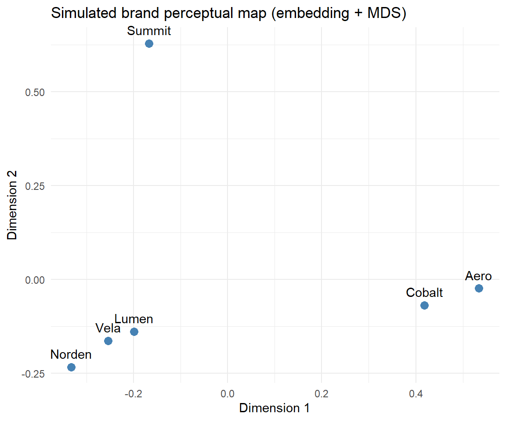
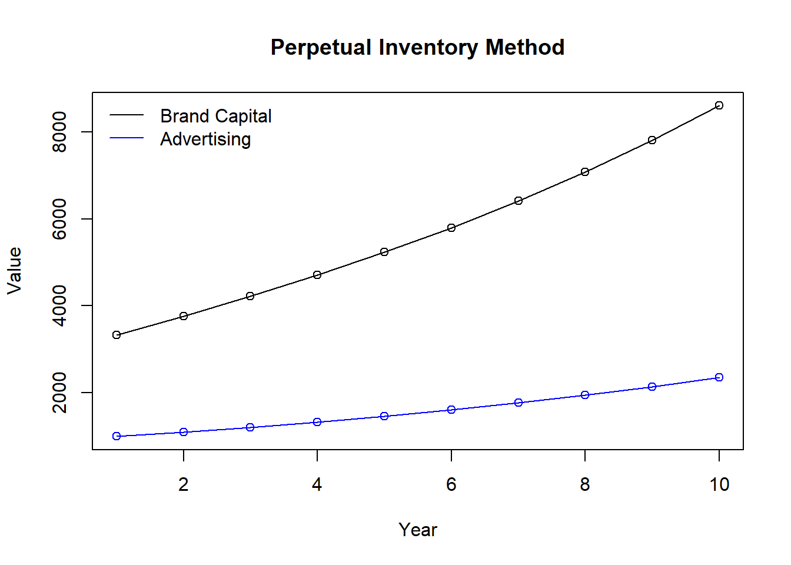

flowchart TB BR["Branding"] CL["Consumer lens<br/>what the brand means<br/>to consumers"] FL["Firm lens<br/>what the brand is worth<br/>to the firm"] EC["Economic view<br/>brands as market signals"] PS["Psychological view<br/>brands as knowledge<br/>structures in memory"] ST["Strategic view<br/>branding as a set of<br/>controllable actions"] FI["Financial view<br/>branding actions priced<br/>in firm value"] BR --> CL BR --> FL CL --> EC CL --> PS FL --> ST FL --> FI
11 Branding
A brand is the set of associations that a name, symbol, or design evokes in the people who encounter it. Those associations are an economic asset: they shift demand, command price premiums, and—when they are strong—surface on the balance sheet and in how equity markets value the firm. This chapter treats branding as two tightly coupled objects: a behavioral construct (what a brand means to consumers) and a financial one (what a brand is worth to the firm). A serious account of branding must connect the two, and the modern empirical literature increasingly does.
The chapter proceeds from the inside out. We begin with the raw materials of a brand—its name, logo, and slogan. We then build to brand equity, the central construct, and confront its measurement controversies head-on. From there we move to the richer psychological structures brands inhabit—associations, personality, relationships, love, authenticity—and to the strategic decisions managers actually make: portfolio architecture, extensions, co-branding, crisis recovery, and global strategy. We close with brand valuation, where the behavioral construct is finally expressed in dollars, and supply reproducible code for the leading valuation methods.
11.1 Conceptual Foundations
Classical theory rationalizes brands as quality signals. When product quality is unobservable before purchase (an experience or credence good), a brand name that is expensive to build and easy to destroy can credibly signal quality: a firm selling low quality cannot profitably imitate the investment because repeat purchase will not materialize. On this view a brand economizes on search and substitutes for information in information-poor markets.
Hyperconnectivity strains this account. Swaminathan et al. (2020) define the hyperconnected world as the continuous, location-independent access among people, devices, and organizations, and argue it changes branding along two axes. First, it blurs ownership: when any stakeholder can broadcast, brand meaning is co-created rather than dictated, moving brands from single to shared ownership. Second, it broadens boundaries: more entities are branded (people, places, ideas, organizations (Thomson 2006; Zenker and Braun 2010)) and commercial brands increasingly carry social missions. The signaling role weakens precisely where information is now abundant—online reviews and search deliver quality information directly—so the brand’s value migrates from signaling quality toward other functions: a cue that economizes on attention in information-rich environments, an instrument of identity expression, a container of socially constructed meaning, and an architect of value within networks.
Two complementary lenses organize the field. The consumer lens splits into an economic view (brands as market signals) and a psychological view (brands as knowledge structures in memory). The firm lens splits into a strategic view (branding as a set of controllable actions) and a financial view (branding actions priced in firm value). The psychological view rests on Belk (1988)‘s extended self: consumers consume to construct and signal identity, so a brand becomes part of who the consumer is. That premise—brands as identity infrastructure—recurs throughout the chapter and explains why ostensibly “soft” constructs (personality, love, authenticity) have hard consequences for demand. Reflecting the migration of brand activity online, Muntinga, Moorman, and Smit (2011) classify consumers’ online brand-related activities (COBRAs) along a ladder of engagement—consuming (passive), contributing (rating, commenting), and creating (producing brand content)—and brands increasingly cultivate owned channels and apps rather than renting attention from marketplaces (Wichmann, Wiegand, and Reinartz 2021). Figure 11.1 maps the two lenses and the four views they contain.
11.2 Brand Elements
The smallest controllable units of a brand are its name, logo, and slogan. Each is a lever on perception before any product experience occurs.
Names carry semantic and phonetic content. Linguistically feminine brand names raise perceived warmth, which in turn lifts attitudes and choice share, both hypothetically and in consequential choice; the effect attenuates for male subjects and for utilitarian products (Pogacar et al. 2021). For technological products, alphanumeric names (e.g., model-number conventions) are more acceptable than for nontechnical products (Pavia and Costa 1993). Names are also sticky assets: in rebranding, most of the sales gain is attributable to the pre- and post-rebranding brand identities rather than to the transition itself (Tsai, Dev, and Chintagunta 2015).
Logos trade off recognition against image. High-recognition logos tend to be natural, harmonious, and moderately elaborate; complex, elaborate logos sustain interest and favor more effectively (Henderson and Cote 1998). Symbol-based logos deliver stronger self-identification benefits than wordmark-only logos (C. W. Park et al. 2013). Logo complexity also interacts with exposure: Janiszewski and Meyvis (2001) find that repetition and consumer motivation jointly determine whether a complex logo is eventually processed as rich or merely as hard, so a design that tests badly on first exposure may still be the right long-run choice. Jiang et al. (2015) extends the argument to descriptive versus non-descriptive marks and shows the fit between logo type and brand meaning matters more than the aesthetic quality of either. Even the mark.s position on the package carries meaning: Sundar and Noseworthy (2014) show that placing a logo high or low activates conceptual metaphors of power and quality, so a layout decision usually delegated to design is a positioning decision. Slogans for strong brands are better liked and more recognizable than slogans for weak brands, independent of respondents’ ability to attribute them correctly (Dahlén and Rosengren 2005)—evidence that brand strength spills onto the evaluation of the brand’s own elements.
Whether a slogan is memorable is a separate question from whether it is liked, and Aka and McCoy (2026) make it a predictive one. They assemble the memorability factors the literature has proposed via a systematic review, operationalize them three ways—NLP features, human ratings, and constructs derived from text embeddings—and score the resulting models against two distinct outcomes: recognition (has this slogan been seen before?) and cued brand recall (which brand does it belong to?). Splitting the outcome that way matters, because a slogan can be highly recognizable and still fail the job it was written for, which is to retrieve the brand; the two are separate dependent variables, not two indicators of one construct.
The paper’s most transferable move is what it does with the embedding model. Raw text embeddings are used not as an alternative feature set but as a benchmark for completeness: whatever predictive accuracy the embeddings achieve beyond the literature-derived factors is an estimate of how much of slogan memorability the published theory has failed to name. That inverts the usual role of a black-box predictor. Instead of the interpretable model being the goal and the embedding being the cheat, the embedding becomes an upper bound against which a body of theory is audited— the same logic Section 45.8 applies to text measures generally, and a template worth borrowing wherever a literature has accumulated a list of proposed drivers and never checked whether the list is exhaustive. The applied payoff is a selection tool: the models predict the memorability of candidate slogans, including for new brands with no exposure history, which turns a copy decision usually settled by managerial taste into a scored comparison.
11.3 Brand Equity
Brand equity is the value a brand name adds beyond a product’s functional utility. It is the central construct of the chapter and one of the few in marketing that has generated two largely separate measurement literatures: a customer-based tradition that reads equity from the consumer’s mind (surveys, scales, choices) and a financial/market-based tradition that reads it from prices, profits, and stock returns. The two traditions rarely cite one another, yet they are measuring the same underlying asset from opposite ends. The most consequential recent development is not a new definition but a new instrument set: always-on computational measurement from social text, images, co-purchase graphs, and, most recently, large language models. This section leads with that computational frontier, then grounds it in the classical customer-based and financial traditions, and closes by bridging explicitly to the marketing-finance machinery of Chapter 24.
Two reference frameworks organize everything that follows. The first is Keller’s (Keller 1993) definition of customer-based brand equity (CBBE) as the differential effect of brand knowledge on consumer response to the brand’s marketing: the same product at the same price elicits a more favorable response under a strong brand. The second is the brand value chain of Keller and Lehmann (2006), which traces equity through four stages, marketing investment, customer mindset (awareness, associations, attitudes), market performance (price premium, share, loyalty), and finally shareholder value. The value chain is the spine that connects the customer-based and financial traditions: customer-based measures sit at the mindset and market- performance stages, financial measures at the shareholder-value stage, and a credible account of brand equity must explain how value propagates from one to the next. S. Srinivasan and Hanssens (2009) (Srinivasan and Hanssens) supply the empirical-methods companion to that conceptual chain, cataloguing the metrics (Tobin’s \(q\), abnormal returns, event-study CARs) and methods (persistence models, vector autoregressions, value-relevance regressions) that link marketing assets, brand equity among them, to firm value. Bridging the two traditions matters because each is incomplete alone: mindset measures can move without ever reaching the cash register, and financial measures can move for reasons that have nothing to do with the brand. Figure 11.2 draws this spine and marks where each measurement tradition reads it.
flowchart LR MI["Marketing<br/>investment"] --> CM["Customer mindset<br/>awareness, associations,<br/>attitudes"] CM --> MP["Market performance<br/>price premium, share,<br/>loyalty"] MP --> SV["Shareholder<br/>value"] CB["Customer-based<br/>measures"] -.-> CM CB -.-> MP FM["Financial and<br/>market-based measures"] -.-> SV
A transparent operationalization at the market-performance stage is the price premium a brand commands over an otherwise-equivalent generic, which is conceptually distinct from value added, \(p - c\) (price over cost of production). A generic can carry value added (e.g., convenience) without carrying brand equity; equity is specifically the increment attributable to the name (D. Aaker 1996). A complementary distinction separates the functional, emotional, and self-expressive benefits a brand’s value proposition delivers (D. Aaker 1996): functional benefits derive from product attributes; emotional benefits from feelings during private use; self-expressive benefits from public signaling of identity. Because mass production has commoditized quality, quality alone no longer confers status (Holt 1998), and the self-expressive component carries an increasing share of equity.
Figure 11.3 maps the measurement routes developed in the remainder of this section: the two classical traditions and the computational instruments that now feed them.
flowchart TB
BE["Brand-equity<br/>measurement"]
subgraph CBT["Customer-based tradition"]
MS["Mindset scales<br/>loyalty, perceived quality,<br/>awareness, associations"]
RP["Revenue and price premium<br/>brand vs private label<br/>in scanner data"]
CC["Conjoint and choice models<br/>equalization price,<br/>brand-specific residual"]
end
subgraph FIN["Financial and market-based tradition"]
TQ["Intangible-value decomposition<br/>Tobin's q logic"]
SR["Stock returns and risk<br/>strong-brand portfolios,<br/>value relevance"]
end
CF["Computational frontier<br/>social text, follower networks,<br/>consumer images, co-purchase baskets,<br/>LLM synthetic respondents"]
BE --> MS
BE --> RP
BE --> CC
BE --> TQ
BE --> SR
CF -.->|"stands in for<br/>periodic surveys"| MS
CF -.->|"leads returns<br/>and firm value"| SR
11.3.1 The Computational Frontier
The classical instruments for measuring equity (surveys, scanner regressions, choice experiments) are periodic, expensive, and backward-looking. The defining shift of the past decade is the migration of measurement onto continuous digital traces: review text, social posts, follower graphs, consumer-posted images, co-purchase baskets, and now synthetic respondents generated by language models. The methodological through-line across this work is representation plus validation: every method pairs a learned representation (topics, embeddings, image features, model judgments) with an external validation against a traditional brand metric (a survey perceptual map, a mindset tracker, a stock return). The right pedagogical emphasis is that pairing, not any single algorithm.
The reference architecture for always-on tracking is Rust et al. (2021), who build a continuously updating brand-reputation index from social-media streams and validate it against established survey brand metrics. The lesson is that a well-constructed real-time index can stand in for a quarterly survey, collapsing the measurement lag from months to hours. Perception can also be recovered from network structure rather than content: Culotta and Cutler (2016) infer brand perceptual attributes (eco-friendly, luxury, nutritious) from who follows whom on social platforms, showing that the company a brand keeps is itself a measurement instrument. From raw text, two complementary geometries emerge. Netzer et al. (2012) recover competitive market structure from forum co-mentions, turning unstructured chatter into a brand map; Tirunillai and Tellis (2014) (cited as the LDA “chatter” study) extract latent quality dimensions, their valence, and their dynamics from hundreds of thousands of reviews. The second wave replaces topic counts with embeddings: Timoshenko and Hauser (2019) use word embeddings to extract non-redundant customer needs from user-generated content, and Gabel, Guhl, and Klapper (2019) introduce P2V-MAP, a product2vec model that learns interpretable brand and product positions from basket co-occurrence at retail scale. Berger et al. (2020) codify the resulting toolkit (dictionaries, topics, embeddings, classifiers) and, importantly for a measurement chapter, its validation requirements.
Brand image is increasingly read from pixels rather than words. Liu, Dzyabura, and Mizik (2020) train a deep convolutional network (BrandImageNet) that recovers perceptual brand attributes directly from consumer-posted images, “visual listening in” as a complement to text listening, and Hartmann et al. (2021) show that the type of consumer image (a “selfie” with the brand versus a “packshot” of it) carries distinct brand meaning and drives engagement differently. The social signal also propagates to firm value: Tirunillai and Tellis (2012) establish that the volume of online chatter leads abnormal stock returns, Luo, Zhang, and Duan (2013) show social-media metrics are leading indicators of firm equity value, and Colicev et al. (2018) route owned versus earned social media through mindset metrics (awareness, satisfaction) to shareholder value, closing the value chain in the social era.
The newest stream treats the language model itself as the measurement device. Li et al. (2024) test whether an LLM can generate brand perceptual maps and attribute scores that match human survey perceptions, validating with a triplet-agreement criterion (do model and humans agree which of two brands is closer to a third?). The broader “silicon sampling” idea, simulating human respondents with a language model, traces to Argyle et al. (2023). The stream is the most active and least settled: LLMs can scale and pre-test brand measures cheaply, but current evidence is that they require a human anchor for validity rather than replacing human respondents outright. We return to a worked, API-free version of the perceptual-map idea in Section 11.3.5.
11.3.2 Customer-Based Measurement
The customer-based tradition measures equity from the consumer mindset. Its managerial origin is Aaker’s five-asset framework (awareness, perceived quality, associations, loyalty, and other proprietary assets) in Managing Brand Equity (Aaker 1991) and the “Brand Equity Ten” measurement battery in Building Strong Brands (Aaker 1996, D. Aaker (1996)); its psychological grounding is Keller’s CBBE (Keller 1993). The dominant survey instruments operationalize these constructs as multi-item scales. Yoo and Donthu (2001) give a parsimonious multidimensional consumer-based brand-equity scale (loyalty, perceived quality, awareness/associations) plus a four-item overall-equity scale; Netemeyer et al. (2004) develop and validate facet measures (perceived quality, perceived value, uniqueness, and willingness to pay a price premium) and show the price-premium facet is the proximal driver of purchase intent, a result that motivates reading equity off market behavior directly.
11.3.2.1 Is Equity Reflective or Formative?
A consequential and unsettled question is whether CBBE is a reflective or a formative construct, because the answer dictates which validity tests apply and how the construct may legitimately be aggregated (Chapter 37). Let \(\eta\) denote latent brand equity and let \(x_1,\dots,x_K\) be observed dimensions (perceived quality, associations, awareness, loyalty). The reflective specification treats the dimensions as manifestations of equity, \[ x_k = \lambda_k \eta + \varepsilon_k, \qquad k = 1,\dots,K, \] so the indicators should be internally consistent and interchangeable; this is the view of Yoo and Donthu (2001). The formative specification reverses the arrows, treating the dimensions as causes that compose equity, \[ \eta = \sum_{k=1}^{K} w_k x_k + \zeta, \] so the indicators need not correlate and are not interchangeable; this is the view of Henseler (2017). The two are not nested and imply different psychometrics: reflective models are evaluated by internal-consistency and convergent/discriminant validity, whereas formative models are evaluated by indicator weights and multicollinearity diagnostics. A pragmatic third position treats equity as an outcome measured directly (e.g., the premium in Equation 11.1) rather than scaled from its drivers; this is often easier to defend to reviewers but is not the field’s consensus.
11.3.2.3 Conjoint and Choice-Based Equity
A third route recovers equity from trade-offs in choice. C. S. Park and Srinivasan (1994) decompose brand equity in a survey-based conjoint into an attribute-based component (the part explained by measured attributes) and a non-attribute, brand-specific residual, and link the residual to extendibility. Swait et al. (1993) define the equalization price, the price reduction that makes a no-name option as attractive as the branded one in a discrete-choice model, giving equity a clean monetary interpretation as the value of the brand’s intangible utility. Erdem and Swait (1998) supply the microfoundation: brands act as signals that reduce perceived risk and information costs, so equity is the credibility and clarity of that signal, mapping directly onto choice-model utility. The equalization-price calculation is worked end-to-end on simulated choice data in Section 11.3.5.
11.3.3 Financial and Market-Based Valuation
The financial tradition measures equity from the firm’s market value. The foundational method is Simon and Sullivan (1993) (Simon and Sullivan), who estimate brand equity from financial- market value: total intangible value is the excess of market value over the replacement cost of tangible assets (a Tobin’s \(q\) logic), and brand equity is the share of that intangible attributable to brand-related drivers (advertising share, order of entry, the advertising-to-sales ratio). Barth et al. (1998) show that published brand-value estimates are value-relevant: they explain share prices and returns incrementally over book equity and earnings, legitimizing brand value as an accounting-relevant intangible. The Interbrand “Best Global Brands” discounted-economic-profit method (implemented in the worked InterBrand demo later in this chapter) is the leading practitioner instrument, and its academic legitimacy rests on Barth et al. A Simon-Sullivan-style Tobin’s \(q\) decomposition on simulated firm financials is given in Section 11.3.5, and it is the explicit computational bridge to Section 24.5.
11.3.3.1 Stock-Return and Risk Evidence
Brand equity shows up in stock returns and risk, not merely in accounting value. Madden (2006) (Madden, Fehle, and Fournier) form portfolios of strong-brand firms from the Interbrand list and show they earn higher returns with lower risk than the market and matched firms, a branding “alpha” after Fama-French and Carhart adjustment. Mizik and Jacobson (2008) (cited in the project as Mizik and Jacobson) show perceptual brand attributes from the Young & Rubicam BrandAsset Valuator predict future stock returns, implying the market does not fully or immediately impound brand-perception changes. D. A. Aaker and Jacobson (2001) establish the same leading relationship for brand attitude in high-technology markets, and Johansson, Dimofte, and Mazvancheryl (2012) show strong brands lost less value in the 2008 financial crisis, evidence that equity buffers downside risk. The estimation problem of recovering the total financial impact of equity from short time series is treated by Mizik (2014). A simulated brand-portfolio long-short return spread, mirroring Madden (2006), appears in Section 11.3.5.
11.3.4 Bridge to the Marketing-Finance Interface
The customer-based and financial traditions meet at firm value, and the meeting point is the Tobin’s \(q\) valuation regression developed in Section 24.5. There, \(q_{it}\), the ratio of a firm’s market value to the replacement cost of its assets, is regressed on marketing assets with firm and year fixed effects, \[ q_{it} = \beta\,\text{BrandIndex}_{it} + \mathbf{x}_{it}^{\top}\boldsymbol{\gamma} + \alpha_i + \delta_t + u_{it}, \tag{11.2}\] so that a customer-based brand index (an embedding-derived equity score, a survey mindset metric, a revenue premium) enters the same regression that prices any other marketing asset. This is the literal computational bridge between the two traditions: the customer-based literature supplies \(\text{BrandIndex}_{it}\), and the marketing-finance literature supplies the identification machinery and the firm-value outcome. S. Srinivasan and Hanssens (2009) is the methodological map for that regression, and the caveats of Section 24.5.6 (reverse causality, omitted intangibles, accounting-proxy bias in \(q\)) apply in full—and so does the deeper one developed in Section 24.5.1: the \(q_{it}\) on the left of Equation 11.2 is an average ratio, whereas the quantity a brand-investment argument needs is the marginal value of a dollar of brand capital. Because brand assets are simultaneously an intangible missing from the denominator and a source of the rents that inflate the numerator, the wedge between the two loads directly onto \(\text{BrandIndex}_{it}\), so \(\beta\) should be read as an upper bound (Gala, Gomes, and Liu 2026; Crouzet and Eberly 2023). A structural counterpart is now available: Belo et al. (2022) estimate brand capital’s share of firm market value at 6–25% without using any brand survey, which is the external benchmark against which an estimate of \(\beta\) can be sanity-checked.
The financial relevance of customer-based equity is by now well established: it is positively associated with stock returns, firm value, and credit ratings and negatively associated with idiosyncratic risk and earnings volatility (Bharadwaj, Tuli, and Bonfrer 2011; Larkin 2013; Madden 2006; Mizik and Jacobson 2008; Rego, Billett, and Morgan 2009), and the asset is even priced in the managerial labor market, where executives accept lower pay to be associated with strong brands, an effect concentrated among CEOs and younger executives (Tavassoli, Sorescu, and Chandy 2014). We revisit valuation quantitatively at the end of this chapter and formalize the event-study machinery in Chapter 24.
The bridge also carries a strategic question that brand equity alone cannot settle: how much of the firm’s marketing effort should go to building the brand rather than managing individual customer relationships. That debate stalled for years on the absence of a firm-level measure of emphasis. Scholdra et al. (2026) supply one by scoring more than 95,000 earnings-call transcripts from over 1,800 firms across 22 years with separate textbook-derived dictionaries for brand and customer management (S. Han, Reinartz, and Skiera 2021), and report three results that should temper any general claim about brand-versus-customer priority: the two foci are essentially uncorrelated, so neither a systematic trade-off nor a systematic complementarity holds; they act on different performance outcomes, revenue- versus cost-related; and a dual emphasis on both performs worse than committing to either one. Section 24.3 develops the measurement and the monitoring pipeline.
11.3.5 Worked Computations
The five demonstrations below run on simulated data, span both measurement traditions, and carry the marketing-finance bridge. They use base R plus dplyr, ggplot2, and MASS, all already standard in this book.
A first demonstration computes the revenue premium of Ailawadi, Lehmann, and Neslin (2003) on simulated weekly scanner data for a national brand and a comparable private label across stores, and recovers each brand’s own-price elasticity as a side metric.
Code
library(dplyr)
set.seed(42)
n_stores <- 30; n_weeks <- 52
grid <- expand.grid(store = 1:n_stores, week = 1:n_weeks)
# National brand: higher baseline price and stronger baseline demand (equity);
# private label: cheaper, weaker baseline. Both face log-log demand in price.
sim_brand <- function(base_logdemand, base_price, elasticity, n, sd_price) {
price <- pmax(0.5, base_price + rnorm(n, 0, sd_price))
units <- exp(base_logdemand + elasticity * log(price) + rnorm(n, 0, 0.20))
data.frame(price = price, units = units)
}
nb <- sim_brand(base_logdemand = 7.0, base_price = 3.20, elasticity = -1.8,
n = nrow(grid), sd_price = 0.25)
pl <- sim_brand(base_logdemand = 6.2, base_price = 2.10, elasticity = -2.4,
n = nrow(grid), sd_price = 0.20)
scan_dat <- bind_rows(
cbind(grid, brand = "National", nb),
cbind(grid, brand = "PrivateLabel", pl)
)
# Revenue premium = (revenue of national brand) - (revenue of private label),
# aggregated to the store-week and averaged (Ailawadi, Lehmann & Neslin 2003).
rev_long <- scan_dat |>
mutate(revenue = price * units) |>
group_by(store, week, brand) |>
summarise(revenue = sum(revenue), .groups = "drop")
rev_nb <- rev_long$revenue[rev_long$brand == "National"]
rev_pl <- rev_long$revenue[rev_long$brand == "PrivateLabel"]
revenue_premium <- mean(rev_nb - rev_pl)
# Own-price elasticity per brand from a log-log regression.
elas <- scan_dat |>
group_by(brand) |>
summarise(elasticity = coef(lm(log(units) ~ log(price)))[["log(price)"]],
.groups = "drop")
cat("Mean revenue premium per store-week: $",
format(round(revenue_premium), big.mark = ","), "\n", sep = "")
#> Mean revenue premium per store-week: $263
print(elas)
#> # A tibble: 2 × 2
#> brand elasticity
#> <chr> <dbl>
#> 1 National -1.88
#> 2 PrivateLabel -2.41The second demonstration is the Simon-Sullivan financial decomposition. Across a cross-section of simulated firms it computes Tobin’s \(q\), isolates intangible value as market value net of tangible replacement cost, regresses that intangible on brand-related drivers, and reports the fitted brand-equity share. This is the same \(q\) object used in Section 24.5.
Code
set.seed(7)
N <- 400
firm <- data.frame(
tangible_repl = runif(N, 50, 500), # replacement cost of tangibles
ad_share = rbeta(N, 2, 5), # advertising share of sales
order_entry = sample(1:6, N, replace = TRUE), # 1 = pioneer (more equity)
rd_intensity = rbeta(N, 2, 8) # other intangible (control)
)
# True data-generating process: intangible value rises in advertising share and
# pioneering (low order-of-entry number), plus non-brand intangibles (R&D) + noise.
brand_intangible <- 120 * firm$ad_share + 15 * (7 - firm$order_entry)
other_intangible <- 200 * firm$rd_intensity
firm$market_value <- firm$tangible_repl + brand_intangible + other_intangible +
rnorm(N, 0, 25)
firm$q <- firm$market_value / firm$tangible_repl
firm$intangible <- firm$market_value - firm$tangible_repl
# Regress intangible value on brand drivers (+ control); fitted brand component
# is the brand-equity share of intangible value (Simon & Sullivan 1993 logic).
fit <- lm(intangible ~ ad_share + I(7 - order_entry) + rd_intensity, data = firm)
firm$brand_equity_hat <- coef(fit)["ad_share"] * firm$ad_share +
coef(fit)["I(7 - order_entry)"] * (7 - firm$order_entry)
brand_share <- mean(firm$brand_equity_hat) / mean(firm$intangible)
cat("Mean Tobin's q: ", round(mean(firm$q), 3), "\n")
#> Mean Tobin's q: 1.596
cat("Brand share of intangible value:", round(100 * brand_share, 1), "%\n")
#> Brand share of intangible value: 66 %The third demonstration mirrors Madden (2006): it simulates monthly returns for a strong-brand and a weak-brand portfolio (the strong portfolio carries a small positive alpha and lower idiosyncratic volatility), recovers alpha and beta from a CAPM-style time-series regression on the strong portfolio, and reports the long-short (strong minus weak) spread with a \(t\)-statistic.
Code
set.seed(2024)
Tm <- 240 # 20 years of monthly returns
mkt <- rnorm(Tm, mean = 0.006, sd = 0.045) # market excess return
rf <- 0.0
alpha_strong <- 0.0025 # ~30 bps/yr branding alpha
strong <- alpha_strong + 0.95 * mkt + rnorm(Tm, 0, 0.020) # lower idio vol
weak <- 0.0000 + 1.10 * mkt + rnorm(Tm, 0, 0.035) # higher idio vol
capm <- lm(I(strong - rf) ~ I(mkt - rf))
spread <- strong - weak
tt <- t.test(spread)
cat("CAPM alpha (monthly):", round(coef(capm)[1], 5),
" annualized:", round(((1 + coef(capm)[1])^12 - 1) * 100, 2), "%\n")
#> CAPM alpha (monthly): 0.0039 annualized: 4.79 %
cat("CAPM beta: ", round(coef(capm)[2], 3), "\n")
#> CAPM beta: 0.995
cat("Long-short mean spread (monthly):", round(mean(spread), 5),
" t =", round(tt$statistic, 2), "\n")
#> Long-short mean spread (monthly): 0.00551 t = 2.12The fourth demonstration computes the equalization-price equity of Swait et al. (1993) on a simulated choice experiment. Three brands and a no-name outside option vary in price and quality; a multinomial logit is fit by maximum likelihood (hand-coded, no external choice package), and the equalization price is the brand-specific intercept divided by the absolute price coefficient, that is, the price cut that would make the no-name option as attractive as the branded one.
Code
set.seed(11)
n_resp <- 1500
J <- 4 # 3 brands + 1 no-name outside option
# True utilities: brand-specific intercepts (ASCs), price (neg), quality (pos).
asc <- c(BrandA = 1.6, BrandB = 1.0, BrandC = 0.4, NoName = 0.0)
b_pr <- -0.9
b_qu <- 0.7
# Each respondent sees one choice set with random price/quality per alternative.
make_set <- function() {
price <- runif(J, 1, 5)
quality <- runif(J, 0, 3)
V <- asc + b_pr * price + b_qu * quality
p <- exp(V) / sum(exp(V))
choice <- sample(1:J, 1, prob = p)
data.frame(alt = 1:J, price = price, quality = quality,
chosen = as.integer(1:J == choice))
}
dat <- do.call(rbind, lapply(1:n_resp, function(i)
cbind(set = i, make_set())))
# Design matrix: 3 brand dummies (NoName is the reference) + price + quality.
X <- cbind(
BrandA = as.integer(dat$alt == 1),
BrandB = as.integer(dat$alt == 2),
BrandC = as.integer(dat$alt == 3),
price = dat$price,
quality = dat$quality
)
negll <- function(par) {
V <- as.vector(X %*% par)
df <- data.frame(set = dat$set, V = V, chosen = dat$chosen)
denom <- tapply(exp(df$V), df$set, sum)
ll <- sum(df$V[df$chosen == 1]) - sum(log(denom))
-ll
}
est <- optim(rep(0, 5), negll, method = "BFGS")$par
names(est) <- colnames(X)
eq_price <- est[c("BrandA", "BrandB", "BrandC")] / abs(est["price"])
cat("Estimated coefficients:\n"); print(round(est, 3))
#> Estimated coefficients:
#> BrandA BrandB BrandC price quality
#> 1.424 0.847 0.334 -0.882 0.607
cat("\nEqualization price (value of brand over no-name), $/unit:\n")
#>
#> Equalization price (value of brand over no-name), $/unit:
print(round(eq_price, 3))
#> BrandA BrandB BrandC
#> 1.615 0.960 0.379The fifth demonstration builds a brand perceptual map from text, in the spirit of Netzer et al. (2012), Timoshenko and Hauser (2019), and Gabel, Guhl, and Klapper (2019), without any external corpus or API. Each brand is given a profile over latent association words; a term-by-brand matrix is embedded with a low-rank singular value decomposition (a stand-in for word2vec or LLM embeddings); brands are then projected to two dimensions by classical multidimensional scaling and plotted with ggplot2. The same pipeline accepts real embeddings (from text2vec or an ellmer call to a language model) in place of the simulated matrix.
Code
library(ggplot2)
set.seed(99)
brands <- c("Summit", "Vela", "Norden", "Aero", "Lumen", "Cobalt")
assoc <- c("rugged", "premium", "playful", "eco", "techy", "trusted",
"affordable", "youthful")
# Latent positioning: each brand emphasizes a few associations.
profile <- matrix(rgamma(length(brands) * length(assoc), shape = 0.4, rate = 1),
nrow = length(assoc), dimnames = list(assoc, brands))
profile["rugged", "Summit"] <- 6; profile["eco", "Summit"] <- 4
profile["premium", "Vela"] <- 6; profile["trusted", "Vela"] <- 4
profile["trusted", "Norden"] <- 6; profile["eco", "Norden"] <- 5
profile["techy", "Aero"] <- 6; profile["youthful","Aero"] <- 4
profile["playful", "Lumen"] <- 6; profile["youthful","Lumen"] <- 5
profile["premium", "Cobalt"] <- 5; profile["techy", "Cobalt"] <- 5
# TF-IDF-style weighting, then a low-rank SVD embedding of the term-brand matrix.
tf <- t(t(profile) / colSums(profile))
idf <- log(ncol(profile) / (rowSums(profile > 0.5) + 1))
M <- tf * idf
sv <- svd(M)
brand_emb <- diag(sv$d[1:4]) %*% t(sv$v[, 1:4]) # 4-dim brand embeddings
colnames(brand_emb) <- brands
# Classical MDS (base R) from cosine distances between brand embeddings.
cos_sim <- function(A) {
A <- scale(A, center = FALSE, scale = sqrt(colSums(A^2)))
t(A) %*% A
}
D <- as.dist(1 - cos_sim(brand_emb))
mds <- cmdscale(D, k = 2)
map_df <- data.frame(brand = brands, Dim1 = mds[, 1], Dim2 = mds[, 2])
ggplot(map_df, aes(Dim1, Dim2, label = brand)) +
geom_point(color = "steelblue", size = 3) +
geom_text(vjust = -0.9) +
labs(title = "Simulated brand perceptual map (embedding + MDS)",
x = "Dimension 1", y = "Dimension 2") +
theme_minimal() +
coord_cartesian(clip = "off")
11.3.6 Brand Loyalty, Awareness, and Prominence
Loyalty has two components that must not be conflated: attitudinal loyalty (a favorable disposition) and behavioral loyalty (repeat purchase), a distinction pioneered by Jacoby and Chestnut and reviewed by Berkowitz, Jacoby, and Chestnut (1978). The two diverge under competitive promotion and can be separately diagnostic of equity. Awareness (brand familiarity) correlates with market performance, but the link is moderated by market characteristics (product homogeneity, technological volatility) and buyer characteristics (buying-center heterogeneity, time pressure) (Homburg, Klarmann, and Schmitt 2010).
Prominence—the conspicuousness of a brand’s mark on a product—operates through a status-signaling logic (Y. J. Han, Nunes, and Drèze 2010). Status accrues to evidence of wealth, i.e., to conspicuous consumption, and luxury goods confer status simply by being shown. Crucially, quiet versus loud branding are different signals decipherable by different audiences. Y. J. Han, Nunes, and Drèze (2010) organize consumers on two dimensions—wealth and need for status—into four types: patricians (high wealth, low need) pay a premium for subtle signals only other patricians can read; parvenus (high wealth, high need) buy loud signals to separate from have-nots; poseurs (low wealth, high need) imitate parvenus, often with counterfeits; and proletarians (low need) do not signal. Two empirical regularities follow and are observed in market data: inconspicuously branded luxury goods can cost more than conspicuously branded ones, and counterfeiters copy the louder, lower-priced items that poseurs demand. Status-consistent communication norms reinforce this: reduced emotionality in messaging signals high status by evoking high-status reference groups (Lee 2021), and prominence raises perceived quality and emotional value, which feed purchase intention (Butcher, Phau, and Teah 2016).
Who actually buys the fakes is now visible at scale. N. Chen and Xiang (2026) analyze millions of cross-border counterfeit orders by U.S. consumers and document a U-shaped income gradient: relative to the middle-income cohort, both low- and high-income consumers buy counterfeits more, and more repeatedly. The two tails differ in composition in a way the signaling logic anticipates—low-income demand loads on lower-tier brands, whereas high-income demand tilts toward ultraluxury and toward the higher-priced listings and classic series (the Hermès Birkin, the Chanel Classic Flap), as if paying for counterfeit quality. The poseur of Y. J. Han, Nunes, and Drèze (2010) is real, but is only one tail of a counterfeit market that reaches well into high-income households.
11.3.7 Perceived Quality and Quality Signaling
Perceived quality is itself an asset: brand quality raises shareholder wealth (D. A. Aaker and Jacobson 1994). Its dynamics are attribute-specific. As a warranty nears expiration, satisfaction with resolvable attributes declines faster yet weighs more heavily on overall quality perceptions, whereas irresolvable attributes decline more slowly and weigh less over time (Slotegraaf and Inman 2004).
When quality is unobservable, firms can signal it through specialization. Kalra and Li (2008) model a firm choosing to offer one service or two. Specializing forgoes profit in the second category; that forgone profit is a signaling cost that a high-quality firm can bear more cheaply than a low-quality imitator, so specialization can support a separating equilibrium in which only high-quality firms specialize. In homogeneous markets specialization is the primary quality signal; in heterogeneous markets pricing can signal quality directly, but specialization persists as an effective secondary signal because its signaling cost is lower, and its use rises with competitive intensity. The general lesson—that credible signals are costly differentially across types—recurs in the prominence and authenticity literatures. Whether consumers actually use brands as signals in the economic sense, rather than merely as heuristics, has been tested across countries: Erdem, Swait, and Valenzuela (2006) find the signaling account holds in markets that differ substantially in brand infrastructure, which is the cross-country validation the theory needed. Corporate-level associations layer on top of product-level ones, and they are not simply additive — a corporate association can improve or damage response to a new product depending on whether it is read as ability or as social responsibility (Berens, Riel, and Bruggen 2005).
11.3.8 Associations, Meaning, Image, Personality, and Coolness
Brand associations are the full network of brand-linked nodes in memory; different audiences can hold contradictory associations with the same stimulus. Batra (2019) define brand meaning as the complete network of associations produced by consumer interactions with the brand and its communications, sourced from visual cues (advertising, packaging), sensory cues (music), and human cues (endorsers, who act as conduits of cultural-meaning transfer). Brand image governs transferability: extensions succeed when parent and target share attributes and image (personality) similarity (Batra and Homer 2004), with prestige- versus popularity-based images interacting with the visual distance between product and consumer to shape willingness to pay (Chu, Chang, and Lee 2021). Corporate social responsibility raises product evaluations even for attributes consumers can directly experience, an effect dampened when the firm’s motives are read as self-interested rather than benevolent (Chernev and Blair 2015). Image can now be measured at scale: Liu, Dzyabura, and Mizik (2020) train a multi-label convolutional network (BrandImageNet) to detect perceptual brand attributes in consumer-created images, recovering survey-consistent perceptions in near real time.
Brand personality—the human characteristics associated with a brand—loads on five dimensions in J. L. Aaker (1997): sincerity, excitement, competence, sophistication, and ruggedness, with an accompanying scale; Grohmann (2009) adds masculine and feminine dimensions and shows spokespeople shape them and that personality–self-congruence drives affective, attitudinal, and behavioral response. Batra, Lenk, and Wedel (2010) supply a Bayesian factor model separating brand- and category-level random effects to quantify a brand’s fit and atypicality, the levers of extension success. Brand coolness (Warren and Campbell 2014; Warren et al. 2019) is a distinct, dynamic, socially constructed positive trait attributed to appropriately autonomous objects: autonomy (diverging from norms) raises coolness only when the divergence is appropriate, which depends on whether the violated norm is descriptive or injunctive, the norm’s perceived legitimacy, and how much the audience values autonomy. Cool brands are first niche (subcultural, rebellious, authentic, original) and acquire iconic and popular attributes only as the mass market adopts them.
Association networks also operate below deliberate awareness, which complicates every self-report measure in this section. Fitzsimons, Chartrand, and Fitzsimons (2008) show that subliminal brand exposure activates the goal a brand represents — Apple raising creativity, a discount retailer raising thrift — and changes behavior without recognition of the prime. The individual difference that governs how much brands do this work at all is captured by Sprott, Czellar, and Spangenberg (2009), whose brand-engagement-in-self-concept measure predicts which consumers incorporate brands into identity in the first place, and therefore for whom the personality and self-congruence findings above should be expected to hold. Which relational role the brand is cast in matters too: Kim and Kramer (2015) find that materialistic consumers prefer a brand positioned as servant rather than as partner, reversing the usual prescription. And identity threat activates brand use in predictable ways — socially excluded consumers shift preference toward brands that signal belonging or distinctiveness depending on how they construe the exclusion (R. P. Chen, Wan, and Levy 2016). Product placement is where these implicit mechanisms are deliberately engineered, and Russell (2002) shows the effect depends on the fit between the placement’s modality and its plot connection rather than on exposure alone.
11.4 Brand Authenticity
Whether authenticity is reflective or formative is, as with equity, unresolved, and the two leading scales take opposite stances. Morhart et al. (2015) propose a reflective perceived-brand-authenticity (PBA) scale—the extent to which consumers perceive a brand as faithful to itself and its consumers and as supporting consumers’ own authenticity—built from four reflective facets (continuity, integrity, credibility, symbolism) and arising from the interplay of objective facts (indexical authenticity), subjective associations (iconic authenticity), and existential motives (existential authenticity); its drivers predict emotional attachment and positive word of mouth. Nunes, Ordanini, and Giambastiani (2021) instead propose a formative account in which authenticity is composed of six component judgments—accuracy, connectedness, integrity, legitimacy, originality, and proficiency—whose weights shift with consumption context. The unresolved measurement model is not academic bookkeeping: it determines whether a brand should manage authenticity by strengthening a coherent latent disposition (reflective) or by intervening on specific, possibly uncorrelated, component judgments (formative).
Underneath both scales sits a lay theory the measurement literature tends to skip past. Newman and Dhar (2014) show that consumers reason about authenticity as if brand essence were physically transmissible: an object touched by the original creator is valued more than a physically identical copy, and the premium behaves like contagion rather than like an inference about quality. That intuition is what makes retro branding work — a revived brand trades on a continuity consumers believe in rather than one the firm can document (Brown, Kozinets, and Sherry 2003) — and it is also why emotional branding is unstable: the same narrative that grants a brand cultural authority invites consumers to police it, so the brand becomes accountable to a story it no longer controls (Thompson, Rindfleisch, and Arsel 2006). The counterfeit market is the clean test of what authenticity is actually doing: Wilcox, Kim, and Sen (2009) find that consumers buy counterfeits when the brand serves a social-adjustive function and not when it serves a value-expressive one, which means the fake substitutes for the signal but not for the meaning.
11.5 Brand Relationships
Consumers form relationships with brands that are valid at the level of lived experience (Fournier 1998). Relationships require interdependence—partners affect and redefine the relationship—and brands are animated through possession by a significant other, anthropomorphization, or acting as an active partner. Fournier (1998) operationalizes brand relationship quality (BRQ) along six facets: love/passion, self-connection, commitment, interdependence, intimacy, and brand-partner quality. BRQ is richer than loyalty, with which it overlaps, and mechanistically connected to brand personality.
Relationship norms govern evaluation. Aggarwal (2004) distinguishes exchange relationships (quid pro quo: expected, prompt repayment) from communal relationships (benefits given to show concern, without expected return); when consumers relate to a brand communally, applying exchange norms violates expectations and damages evaluations. People judge brands as they judge people—on warmth and competence (J. Aaker, Vohs, and Mogilner 2010): for-profits read as competent but cold, nonprofits as warm but less competent, and credibility cues that raise perceived competence recover willingness to buy from nonprofits. Anthropomorphism has a dark side: humanized brands suffer larger evaluation losses under negative publicity because consumers attribute misbehavior to stable traits, with the penalty concentrated among entity theorists (who believe traits are fixed), for whom compensation—not apology or denial—is the only effective response (Puzakova, Kwak, and Rocereto 2013; MacInnis and Folkes 2017). Self-construal moderates which connection matters: self-concept connection dominates under independent self-construal, country-of-origin connection under interdependent self-construal (Swaminathan, Page, and Gürhan-Canli 2007), and avoidance/anxiety attachment styles predict preferences for exciting versus sincere brands (Swaminathan, Stilley, and Ahluwalia 2009).
11.5.1 Brand Love
Brand love sits at the level of brand equity and subsumes brand affect. Batra, Ahuvia, and Bagozzi (2012) establish it as a higher-order reflective construct distinct from the transient emotion of love—long-lasting and spanning affective, cognitive, and behavioral experiences. Bagozzi, Batra, and Ahuvia (2016) distill a parsimonious scale with three reflective higher-order factors—self–brand integration, positive emotional connection, and passion-driven behavior—validated against method bias with a multitrait–multimethod design.
11.6 Reputation and Evaluation
Reputation is a global evaluation of an organization accumulated over time (Fombrun and Shanley 1990; J. Aaker, Vohs, and Mogilner 2010), carrying both competence and warmth dimensions. It is broader than brand equity in one telling sense: equity, a marketing construct, typically denotes the positive part of the firm, whereas reputation, a management construct, spans both positive and negative. Reputation is actively managed in review platforms. Proserpio and Zervas (2017) show hotels that begin responding to reviews gain about 0.12 stars on average, but receive fewer, longer negative reviews thereafter—dissatisfied customers self-censor short, unjustified complaints when they anticipate scrutiny—so managers face a trade-off between the quantity and the depth of negative feedback. Because responding is a non-random managerial choice, the paper is a useful template for identification under endogenous treatment. Evaluation is also socially contingent: the mere revealed presence of virtual supporters shifts a target consumer’s brand evaluation and purchase intention, moderated by supporter composition and competitor salience (Naylor, Lamberton, and West 2012), and social-media-based favorability measures—debiased for poster selection via a probabilistic graphical model—track traditional survey measures (Zhang and Moe 2021).
11.7 Brand Architecture and Portfolio
A firm’s brand architecture ranges from a branded house (one master brand across products) to a house of brands (independent brands). The branded house yields efficiency and lower customization and cannibalization but concentrates risk; V. R. Rao, Agarwal, and Dahlhoff (2004) find corporate branding (branded house) associated with higher Tobin’s \(q\) and mixed strategies with lower values. L. Hsu, Fournier, and Srinivasan (2015) extend this to four strategies—house of brands, branded house, sub-branding (e.g., Intel Pentium: master plus product brand, high risk/high return), and endorsed branding (a graphically subordinate parent, reduced risk)—plus hybrids, and decompose idiosyncratic risk into reputation, dilution, cannibalization, and stretch components: sub-branding creates the most firm value but carries the most risk. Portfolio profitability can rise from pruning lower-tier variants, moderated by the upper- to lower-tier ratio (Aribarg and Arora 2008), and portfolios are characterized by the number of brands and segments, internal competition, and perceived quality/price (Morgan and Rego 2009). Figure 11.4 arrays the four strategies along the architecture spectrum.
flowchart LR BH["Branded house<br/>one master brand<br/>across products<br/>efficiency, concentrated risk"] SB["Sub-branding<br/>master plus product brand<br/>highest value, highest risk"] EB["Endorsed branding<br/>graphically subordinate<br/>parent, reduced risk"] HB["House of brands<br/>independent brands"] BH --- SB SB --- EB EB --- HB
11.7.1 Co-branding and Ingredient Branding
In brand alliances, partners’ reputations spill over onto one another (A. R. Rao, Qu, and Ruekert 1999; Simonin and Ruth 1998). Stock markets react to co-branded product introductions as signals of innovativeness and quality, rewarding consistency between partners and exclusive partnerships (Cao and Sorescu 2013), with the brand-value effect moderated by the value differential between partners and prior exploitation of the target brand (Cao and Yan 2017). Alliance reputations are fragile: preventable, controllable, purposeful crises damage the culpable ally, and even non-culpable partners suffer indirectly through negative post-crisis sentiment toward the partnership (Singh, Crisafulli, and Quamina 2020). In ingredient branding, co-branded trial spills over behaviorally onto both host and ingredient brands, more so among non-loyal past consumers and when perceived fit is high (Swaminathan, Reddy, and Dommer 2011). Followership data can surface alliance opportunities: Malhotra and Bhattacharyya (2022) introduce brand transcendence—the overlap between a brand’s followers and those of brands in a new category—from co-followership patterns on social media.
Malhotra et al. (2026) build that observation into a full discovery pipeline, which is a different kind of contribution from the effect estimates above. The managerial problem they target is combinatoric: the number of candidate partnerships in a market is quadratic in the number of brands, so the binding constraint on alliance strategy is screening, not evaluation. Their framework—brand alliance network exploitation (BANE)—combines offline brand attributes with online co-mention signals from digital user traces, learns network embeddings over the resulting information network, and predicts which pairs will ally.
Three features make it more than a ranking model. It is validated on a temporal holdout, so the test is whether pre-announcement signals predict alliances that had not yet happened, rather than whether the embedding reconstructs alliances it was fitted on. It is validated against people: consumer and brand-manager surveys confirm that BANE-identified opportunities are judged more promising than controls, which is the step that separates a plausible-looking network artifact from a commercially meaningful one. And it treats the predicted-but-not-realized cases as the output of interest rather than as prediction error—the BANE matrix qualifies those, and the framework then generates marketing-mix execution guidance for them. The last move is the one most worth imitating: a model built to predict an observed behavior is repurposed so that its false positives, properly qualified, become the recommendation set.
11.7.2 Acquisitions and Disposals
Brand-asset transactions are valued by markets through an event study. For firm \(i\) on day \(t\), the abnormal return is the realized return minus its expectation from a market model estimated over a pre-event window, \[ \mathrm{AR}_{it} = R_{it} - \mathbb{E}[R_{it} \mid \text{market model}], \qquad \mathrm{CAR}_i = \sum_{t \in W} \mathrm{AR}_{it}, \] and the cumulative abnormal return \(\mathrm{CAR}_i\) over a short window \(W\) is regressed on transaction characteristics, after screening confounds (earnings announcements, splits, executive changes, buybacks, dividend changes) within the window (McWilliams and Siegel 1997; R. Srinivasan and Bharadwaj 2004). Wiles, Morgan, and Rego (2012) apply this to brand acquisitions and disposals and find effects that are not symmetric: abnormal returns depend on the acquirer’s marketing capability, its channel relationships, and the relative price/quality positioning of the brands involved—investors reward acquirers who realize cost synergies but penalize those touting revenue synergies. Marketing capability is itself estimated as a stochastic-frontier efficiency score: with intangible value (Tobin’s \(q\), residualized for technology and management quality) as output and marketing resources (advertising, SG&A, trademarks) as inputs, capability is the firm’s distance from the efficient frontier (Dutta, Narasimhan, and Rajiv 1999). Complementary findings show acquired-brand value rising in the target’s marketing capability and portfolio diversification (Bahadir, Bharadwaj, and Srivastava 2008), and that negative reactions to acquisitions trace to a perceived loss of the brand’s unique values, conditional on brand age, leadership continuity, and value alignment (Biraglia et al. 2022).
11.8 Brand Extensions
A brand extension attaches an established name to a product in a new category. The classic determinant of success is perceived fit between parent and extension (D. A. Aaker and Keller 1990), though fit can be overridden by key brand associations that themselves create the basis of fit (Broniarczyk and Alba 1994), and fit’s influence fades once consumers receive richer attribute information about the extension (Klink and Smith 2001).
A choice-model formalization clarifies the mechanism. Let a consumer’s utility for a candidate extension be \[ U = \beta_{\text{brand}} + \boldsymbol{\beta}_{\text{attr}}^{\top}\mathbf{x} + \beta_{\text{int}}\,(\text{brand} \times \mathbf{x}) + \epsilon, \] where the interaction term captures brand–attribute synergy in the parent category. Rangaswamy, Burke, and Oliva (1993) show that a brand deriving utility largely from such an interaction is less extendable than an equally preferred brand whose utility is free-standing; extendibility is therefore maximized by investing in non-product-specific values (quality, style, durability, reputation). Extensions also feed back on the parent. Swaminathan, Fox, and Reddy (2001) model parent-brand choice with a binary logit—chosen over the multinomial form because it isolates the incremental loyalty coefficient—and find positive reciprocal effects of extension trial on parent choice (strongest for prior non-users) and evidence of negative spillover from extension failure (strongest for loyal users); experience with the parent drives extension trial but not repeat. Strong brands command extension price premiums that rise with fit and fall with the extension’s financial and social risk (DelVecchio and Smith 2005), and quality reach is asymmetric: high-quality brands extend further than low-quality brands (Heath, DelVecchio, and McCarthy 2011). For context-dependent consumers, benefit-based information can rescue low-fit extensions while attribute-based information depresses them; context-independent consumers judge on fit regardless (Mathur et al. 2022).
11.9 Strategic Branding Decisions
11.9.1 Brand Crisis and Recovery
Brand crises—product-harm events, firestorms, negative word of mouth—spill across a firm’s segments and brands, with consequences sharpest within a country (Borah and Tellis 2016). Consumers interpret a firm’s crisis response through their prior expectations of the firm (Dawar and Pillutla 2000), crises contaminate comparable brands in the same category (Dahlén and Lange 2006), and effects in foreign markets follow an inverted-U in psychological distance that strong marketing capabilities attenuate (Dinner, Kushwaha, and Steenkamp 2018). On social media, response style matters: active listening and empathy evoke gratitude in high-arousal customers even before the failure is resolved, an effect Herhausen et al. (2022) identify across 472,995 negative posts in 89 S&P 500 brand communities, instrumenting response with text-derived arousal, tie strength, and linguistic-style matching while controlling for firm-, community-, and post-level covariates.
11.9.2 Global Brand Strategy
Perceived brand globalness raises purchase likelihood through perceived quality and prestige (E M Steenkamp, Batra, and Alden 2002; Davvetas, Sichtmann, and Diamantopoulos 2015), moderated by consumer ethnocentrism (Shimp and Sharma 1987); a more globally recognized brand also gains in trust, affect, and association with global citizenship (Steenkamp 2019; Torelli and Ahluwalia 2012). An alternative route is to become an icon of the local culture: Xie, Batra, and Peng (2015) formalize perceived brand localness and a brand identity expressiveness construct—the brand’s capacity to construct and signal self- and social identity—through which the quality and prestige paths of the globalness model are mediated to null. In developing markets, nonlocal-origin brands are preferred for the social status they confer, especially among the status-susceptible and for socially visible, unfamiliar categories (BATRA et al. 2000). Preferences are also path-dependent: consumers carry local brand preferences to new locations, so early share advantages persist for decades (Bart J. Bronnenberg, Dhar, and Dubé 2009; Bart J. Bronnenberg, Dubé, and Gentzkow 2012).
11.9.3 Competitive Dynamics
Competitive context reshapes brand response. Publicly complimenting a competitor (“brand-to-brand praise”) can raise sales and reputation by signaling warmth, with the largest gains for skeptical audiences and for-profit complimenters when the praise is authentic (Zhou, Du, and Cutright 2021). Consumer support for small brands rises under competitive threat from large brands (Paharia, Avery, and Keinan 2014), and advertising’s primary function is often category expansion rather than share stealing, with the complementary (category-building) function stronger in larger markets (Dubé and Manchanda 2005)—a theme developed in Chapter 13. Positioning also determines who captures a promotion’s spillover: Bart J. Bronnenberg and Wathieu (1996) show that promotion effects run asymmetrically across the quality tier, so an identical discount transfers share very differently depending on which side of the positioning gap the promoting brand sits — the brand-level counterpart to the price-tier asymmetry in Chapter 20.
11.10 Brand–Consumer Interaction
Brand experience—sensory, affective, cognitive, and behavioral responses evoked by brand stimuli—predicts purchase and loyalty (Brakus, Schmitt, and Zarantonello 2009), with online experience driven by credibility and utility (Morgan-Thomas and Veloutsou 2013) and the relative value of experiential versus functional communication differing across developed and developing markets (Zarantonello, Jedidi, and Schmitt 2013). Co-creation is double-edged: it boosts empowerment and brand identity in general (Fuchs, Prandelli, and Schreier 2010) but can fail to lift liking in luxury categories (Fuchs et al. 2013) and among high-power-distance, conservative consumers (Paharia and Swaminathan 2019). Brand communities sustain engagement through oppositional loyalty—devotion to one brand defined partly against another (Muniz and O’Guinn 2001)—and can take on quasi-religious intensity (Muñiz Jr. and Schau 2005).
What a community actually does for the firm has been specified more precisely since. Schau, Muñiz, and Arnould (2009) decompose community into twelve value-creating practices—welcoming, staking, badging, documenting, and the rest—which reframes the community from a sentiment to a set of repeatable behaviors a firm can support or disrupt. The effects are not uniformly benign: Algesheimer, Dholakia, and Herrmann (2005) find in a European car-club panel that community integration raises loyalty to the brand while simultaneously raising members’ resistance to the firm’s own marketing, so the same mechanism that locks customers in reduces the firm’s ability to steer them. Thompson and Arsel (2004) traces the sharper version of this in the Starbucks case, where the brandscape itself became material for consumers constructing anticorporate identities. Consumers can also resist for reasons unrelated to community: Lam et al. (2010) shows switching resistance persisting even when a radically new brand is objectively superior, because the incumbent brand is load-bearing for identity rather than merely preferred.
The social-media layer adds a distinct set of regularities. Brand-related content produced by consumers differs systematically from firm-produced content in what it emphasizes and how it is received (Smith, Fischer, and Yongjian 2012); the popularity of a brand post on a fan page is predictable from its characteristics rather than from the brand’s stature (Vries, Gensler, and Leeflang 2012); and consumer-to-consumer communication inside a branded online community shifts brand outcomes independently of anything the firm says (Adjei, Noble, and Noble 2009). Gensler et al. (2013) is the synthesis of what this environment changes for brand management, and the essential point is a loss of control rather than a gain in reach.
11.11 Brand Valuation
Brand value travels under many names: brand equity, brand value, and brand valuation in marketing; brand capital and intangible capital in finance and accounting. Firm value derives from tangible assets and intangibles, the latter including knowledge capital and brand capital. The valuation question is how much of firm value the brand explains, and firms capture only part of the potential: Fischer and Wies (2024) estimate that firms realize on average just 35% of their financial brand-leverage potential, a “brand capabilities gap” of roughly $2.1 billion per brand (≈4.3% of firm value), closeable through identifiable market-strategy levers.
Valuation methods divide into output-based measures (which read value from realized outcomes and are forward-looking) and input-based measures (which accumulate spending and are backward-looking). The evidence favors output-based measures: an equal-weighted portfolio of top brands earns ≈3% annual abnormal returns—concentrated in firms that build brands internally—while the traditional input measure (advertising expense) earns none, and analysts systematically underreact to brand strength, leaving excess returns after earnings announcements (Boustanifar and Kang 2025). Trademark registrations tell the same story: they predict profitability and returns and are undervalued by investors, identified using the Federal Trademark Dilution Act as an exogenous shock to trademark protection (P.-H. Hsu et al. 2022).
11.11.1 Output-Based: The InterBrand Discounted-Earnings Method
The InterBrand approach values a brand in three steps: compute economic profit, isolate the share attributable to the brand via a Role of Brand Index (RBI), and discount projected brand earnings by a rate reflecting brand strength. Economic profit is after-tax operating profit net of a capital charge, \[ \text{Economic Profit}_t = \text{After-Tax Operating Profit}_t - \text{Cost of Capital}_t, \] brand earnings apply the RBI, \[ \text{Brand Earnings}_t = \text{Economic Profit}_t \times \text{RBI}, \] and brand value is the present value of projected brand earnings plus a terminal value, \[ \text{Brand Value} = \sum_{t=1}^{T} \frac{\text{Brand Earnings}_t}{(1+r)^{t}} + \frac{\text{Terminal Value}}{(1+r)^{T}}, \qquad \text{Terminal Value} = \frac{\text{Brand Earnings}_T}{r - g}, \] where \(r\) is the discount rate and \(g\) the perpetual growth rate (the Gordon-growth terminal value, valid only for \(g < r\)). The following reproducible example projects five years of history forward ten years.
Code
# Historical data (years 1-5)
after_tax_profit <- c(500000, 520000, 540000, 560000, 580000)
cost_of_capital <- c(100000, 105000, 110000, 115000, 120000)
RBI <- 0.7 # Role of Brand Index
discount_rate <- 0.08 # annual discount rate r
future_years <- 6:15 # 10-year projection horizon
# Step 1: historical economic profit and its average growth rate
economic_profit <- after_tax_profit - cost_of_capital
growth_rate <- mean(diff(economic_profit) / head(economic_profit, -1))
# Step 2: project economic profit and brand earnings
projected_economic_profit <- economic_profit[length(economic_profit)] *
(1 + growth_rate)^(seq_along(future_years))
projected_brand_earnings <- projected_economic_profit * RBI
# Step 3: discount to present value (as of year 6)
discounted_future_earnings <- projected_brand_earnings /
(1 + discount_rate)^(seq_along(future_years))
# Terminal value (Gordon growth, g < r)
terminal_growth_rate <- 0.02
terminal_value <- projected_brand_earnings[length(projected_brand_earnings)] /
(discount_rate - terminal_growth_rate)
discounted_terminal_value <- terminal_value /
(1 + discount_rate)^length(future_years)
total_brand_value <- sum(discounted_future_earnings) + discounted_terminal_value
cat("Average growth rate: ", round(growth_rate, 4), "\n")
#> Average growth rate: 0.0356
cat("Total brand value (year 6): $", format(round(total_brand_value), big.mark = ","), "\n")
#> Total brand value (year 6): $ 6,099,67811.11.2 Output-Based: A Text Measure from SEC Filings
Boustanifar and Kang (2025) construct a text-based measure as the frequency of the words brand(s) in a filing, normalized by document length. The measure is forward-looking and covers firms that disclose no advertising expense (e.g., Tesla, Uber, Salesforce).
Code
# Base-R implementation (no external NLP dependencies) of the brand-intensity
# measure: count of "brand"/"brands" tokens divided by total word count.
brand_text_measure <- function(texts) {
clean <- gsub("[^a-z ]", " ", tolower(texts)) # keep letters and spaces
total_words <- vapply(strsplit(trimws(clean), "\\s+"),
function(w) sum(nzchar(w)), numeric(1))
brand_count <- vapply(gregexpr("\\bbrands?\\b", clean),
function(m) if (m[1] == -1L) 0 else length(m), numeric(1))
data.frame(
filing_id = seq_along(texts),
brand_count = brand_count,
total_words = total_words,
brand_intensity = ifelse(total_words > 0, brand_count / total_words, 0)
)
}
sec_filings <- c(
"Our brand is our most valuable asset; we invest in the brand every year.",
"This filing discusses logistics and supply chains with no brand emphasis.",
"Brands, brand equity, and brand loyalty drive our pricing power."
)
brand_text_measure(sec_filings)
#> filing_id brand_count total_words brand_intensity
#> 1 1 2 14 0.14285714
#> 2 2 1 11 0.09090909
#> 3 3 3 10 0.3000000011.11.3 Input-Based: The Perpetual-Inventory Method
The input view treats brand capital as a stock accumulated from advertising and depreciated each period. With depreciation rate \(\delta\) and advertising \(A_t\), \[ K_t = (1-\delta)\,K_{t-1} + A_t, \qquad K_0 = \frac{A_0}{g + \delta}, \] where the initial stock \(K_0\) assumes a balanced-growth path with advertising growth \(g\) (Vitorino 2014; Belo, Lin, and Vitorino 2014). The method is standard but limited: roughly 70% of firms—and many top brands—do not report advertising expense, the input reflects spending rather than its quality or effectiveness, it is backward-looking, and some valuable brands advertise minimally (Doyle 1990). In the cross-section, firms with lower brand-capital investment rates and higher brand-capital intensity earn higher average returns (≈5% per year), consistent with a neoclassical investment model treating brand capital as a production factor subject to adjustment costs (Belo, Lin, and Vitorino 2014).
Code
initial_advertising <- 1000 # A_0
growth_rate <- 0.10 # g
depreciation_rate <- 0.20 # delta
num_years <- 10
initial_stock <- initial_advertising / (growth_rate + depreciation_rate)
advertising <- initial_advertising * (1 + growth_rate)^(0:(num_years - 1))
brand_capital <- numeric(num_years)
brand_capital[1] <- initial_stock
for (t in 2:num_years) {
brand_capital[t] <- (1 - depreciation_rate) * brand_capital[t - 1] + advertising[t]
}
results <- data.frame(Year = 1:num_years,
Advertising = round(advertising),
Brand_Capital = round(brand_capital))
results
#> Year Advertising Brand_Capital
#> 1 1 1000 3333
#> 2 2 1100 3767
#> 3 3 1210 4223
#> 4 4 1331 4710
#> 5 5 1464 5232
#> 6 6 1611 5796
#> 7 7 1772 6408
#> 8 8 1949 7075
#> 9 9 2144 7804
#> 10 10 2358 8601
plot(results$Year, results$Brand_Capital, type = "o",
xlab = "Year", ylab = "Value", main = "Perpetual Inventory Method",
ylim = range(c(results$Brand_Capital, results$Advertising)))
lines(results$Year, results$Advertising, type = "o", col = "blue")
legend("topleft", legend = c("Brand Capital", "Advertising"),
col = c("black", "blue"), lty = 1, bty = "n")
11.12 Key Takeaways
- Brand elements are now scorable before launch. Slogan memorability splits into two outcomes—recognition and cued brand recall—and models built from literature-derived factors plus text embeddings predict both for candidate slogans, including for brands with no exposure history (Aka and McCoy 2026). The embedding’s margin over the theory-derived features doubles as an estimate of what the slogan literature has not yet named.
- Brand equity is the demand advantage attributable to the name—formally the price premium in Equation 11.1—and is distinct from value added.
- Whether equity (and authenticity) is reflective or formative is unsettled and dictates measurement and management; do not assume one without argument (Chapter 37).
- Many brand phenomena—prominence, specialization, authenticity—are signaling problems whose logic is that credible signals are differentially costly across types.
- Brand actions are priced by markets; event studies and stochastic-frontier capability estimates connect branding to firm value (Chapter 24).
- Output-based valuations dominate input-based ones empirically; advertising expense is a weak proxy for brand strength.
Aaker, David. 1996. Building Strong Brands. Simon; Schuster.
Aaker, David A., and Robert Jacobson. 1994. “The Financial Information Content of Perceived Quality.” Journal of Marketing Research 31 (2): 191. https://doi.org/10.2307/3152193.
———. 2001. “The Value Relevance of Brand Attitude in High-Technology Markets.” Journal of Marketing Research 38 (4): 485–93. https://doi.org/10.1509/jmkr.38.4.485.18905.
Aaker, David A., and Kevin Lane Keller. 1990. “Consumer Evaluations of Brand Extensions.” Journal of Marketing 54 (1): 27. https://doi.org/10.2307/1252171.
Aaker, Jennifer L. 1997. “Dimensions of Brand Personality.” Journal of Marketing Research 34 (3): 347–56. https://doi.org/10.2307/3151897.
Aaker, Jennifer, Kathleen D. Vohs, and Cassie Mogilner. 2010. “Nonprofits Are Seen as Warm and For-Profits as Competent: Firm Stereotypes Matter.” Journal of Consumer Research 37 (2): 224–37. https://doi.org/10.1086/651566.
Adjei, Mavis T., Stephanie M. Noble, and Charles H. Noble. 2009. “The Influence of C2C Communications in Online Brand Communities on Customer Purchase Behavior.” Journal of the Academy of Marketing Science 38 (5): 634–53. https://doi.org/10.1007/s11747-009-0178-5.
Aggarwal, Pankaj. 2004. “The Effects of Brand Relationship Norms on Consumer Attitudes and Behavior.” Journal of Consumer Research 31 (1): 87–101. https://doi.org/10.1086/383426.
Ailawadi, Kusum L., Donald R. Lehmann, and Scott A. Neslin. 2003. “Revenue Premium as an Outcome Measure of Brand Equity.” Journal of Marketing 67 (4): 1–17. https://doi.org/10.1509/jmkg.67.4.1.18688.
Aka, Ada, and John McCoy. 2026. “Predicting the Memorability of Brand Slogans.” Journal of Marketing Research. https://doi.org/10.1177/00222437261481110.
Argyle, Lisa P., Ethan C. Busby, Nancy Fulda, Joshua R. Gubler, Christopher Rytting, and David Wingate. 2023. “Out of One, Many: Using Language Models to Simulate Human Samples.” Political Analysis 31 (3): 337–51. https://doi.org/10.1017/pan.2023.2.
Aribarg, Anocha, and Neeraj Arora. 2008. “Brand Portfolio Promotions.” Journal of Marketing Research 45 (4): 391–402. https://doi.org/10.1509/jmkr.45.4.391.
Bagozzi, Richard P., Rajeev Batra, and Aaron Ahuvia. 2016. “Brand Love: Development and Validation of a Practical Scale.” Marketing Letters 28 (1): 1–14. https://doi.org/10.1007/s11002-016-9406-1.
Bahadir, S. Cem, Sundar G Bharadwaj, and Rajendra K Srivastava. 2008. “Financial Value of Brands in Mergers and Acquisitions: Is Value in the Eye of the Beholder?” Journal of Marketing 72 (6): 49–64. https://doi.org/10.1509/jmkg.72.6.49.
Barth, Mary E, Michael B Clement, George Foster, and Ron Kasznik. 1998. “Brand Values and Capital Market Valuation.” Review of Accounting Studies 3 (1): 41–68.
Batra, Rajeev. 2019. “Creating Brand Meaning: A Review and Research Agenda.” Journal of Consumer Psychology 29 (3): 535–46. https://doi.org/10.1002/jcpy.1122.
Batra, Rajeev, Aaron Ahuvia, and Richard P. Bagozzi. 2012. “Brand Love.” Journal of Marketing 76 (2): 1–16. https://doi.org/10.1509/jm.09.0339.
Batra, Rajeev, and Pamela Miles Homer. 2004. “The Situational Impact of Brand Image Beliefs.” Journal of Consumer Psychology 14 (3): 318–30. https://doi.org/10.1207/s15327663jcp1403_12.
Batra, Rajeev, Peter Lenk, and Michel Wedel. 2010. “Brand Extension Strategy Planning: Empirical Estimation of BrandCategory Personality Fit and Atypicality.” Journal of Marketing Research 47 (2): 335–47. https://doi.org/10.1509/jmkr.47.2.335.
BATRA, R, V RAMASWAMY, D ALDEN, J STEENKAMP, and S RAMACHANDER. 2000. “Effects of Brand Local and Nonlocal Origin on Consumer Attitudes in Developing Countries.” Journal of Consumer Psychology 9 (2): 83–95. https://doi.org/10.1207/s15327663jcp0902_3.
Belk, Russell W. 1988. “Possessions and the Extended Self.” Journal of Consumer Research 15 (2): 139. https://doi.org/10.1086/209154.
Belo, Frederico, Vito D. Gala, Juliana Salomao, and Maria Ana Vitorino. 2022. “Decomposing Firm Value.” Journal of Financial Economics 143 (2): 619–39. https://doi.org/10.1016/j.jfineco.2021.08.007.
Belo, Frederico, Xiaoji Lin, and Maria Ana Vitorino. 2014. “Brand Capital and Firm Value.” Review of Economic Dynamics 17 (1): 150–69.
Berens, Guido, Cees B. M. van Riel, and Gerrit H. van Bruggen. 2005. “Corporate Associations and Consumer Product Responses: The Moderating Role of Corporate Brand Dominance.” Journal of Marketing 69 (3): 35–48. https://doi.org/10.1509/jmkg.69.3.35.66357.
Berger, Jonah, Ashlee Humphreys, Stephan Ludwig, Wendy W. Moe, Oded Netzer, and David A. Schweidel. 2020. “Uniting the Tribes: Using Text for Marketing Insight.” Journal of Marketing 84 (1): 1–25. https://doi.org/10.1177/0022242919873106.
Berkowitz, Eric N., Jacob Jacoby, and Robert Chestnut. 1978. “Brand Loyalty: Measurement and Management.” Journal of Marketing Research 15 (4): 659. https://doi.org/10.2307/3150644.
Bharadwaj, Sundar G., Kapil R. Tuli, and Andre Bonfrer. 2011. “The Impact of Brand Quality on Shareholder Wealth.” Journal of Marketing 75 (5): 88–104. https://doi.org/10.1509/jmkg.75.5.88.
Biraglia, Alessandro, Christoph Fuchs, Elisa Maira, and Stefano Puntoni. 2022. “EXPRESS: When and Why Consumers React Negatively to Brand Acquisitions: A Values Authenticity Account.” Journal of Marketing, 00222429221137817.
Borah, Abhishek, and Gerard J. Tellis. 2016. “Halo (Spillover) Effects in Social Media: Do Product Recalls of One Brand Hurt or Help Rival Brands?” Journal of Marketing Research 53 (2): 143–60. https://doi.org/10.1509/jmr.13.0009.
Boustanifar, Hamid, and Young Dae Kang. 2025. “The Brand Premium.” The Review of Financial Studies 38 (1): 294–336.
Brakus, J. Joško, Bernd H Schmitt, and Lia Zarantonello. 2009. “Brand Experience: What Is It? How Is It Measured? Does It Affect Loyalty?” Journal of Marketing 73 (3): 52–68. https://doi.org/10.1509/jmkg.73.3.52.
Broniarczyk, Susan M., and Joseph W. Alba. 1994. “The Importance of the Brand in Brand Extension.” Journal of Marketing Research 31 (2): 214. https://doi.org/10.2307/3152195.
Bronnenberg, Bart J., Sanjay K. Dhar, and Jean-Pierre H. Dubé. 2009. “Brand History, Geography, and the Persistence of Brand Shares.” Journal of Political Economy 117 (1): 87–115. https://doi.org/10.1086/597301.
Bronnenberg, Bart J, Jean-Pierre H Dubé, and Matthew Gentzkow. 2012. “The Evolution of Brand Preferences: Evidence from Consumer Migration.” American Economic Review 102 (6): 2472–2508.
Bronnenberg, Bart J., and Luc Wathieu. 1996. “Asymmetric Promotion Effects and Brand Positioning.” Marketing Science 15 (4): 379–94. https://doi.org/10.1287/mksc.15.4.379.
Brown, Stephen, Robert V. Kozinets, and John F. Sherry. 2003. “Teaching Old Brands New Tricks: Retro Branding and the Revival of Brand Meaning.” Journal of Marketing 67 (3): 19–33. https://doi.org/10.1509/jmkg.67.3.19.18657.
Butcher, Luke, Ian Phau, and Min Teah. 2016. “Brand Prominence in Luxury Consumption: Will Emotional Value Adjudicate Our Longing for Status?” Journal of Brand Management 23 (6): 701–15. https://doi.org/10.1057/s41262-016-0010-8.
Cao, Zixia, and Alina Sorescu. 2013. “Wedded Bliss or Tainted Love? Stock Market Reactions to the Introduction of Cobranded Products.” Marketing Science 32 (6): 939–59. https://doi.org/10.1287/mksc.2013.0806.
Cao, Zixia, and Ruiliang Yan. 2017. “Does Brand Partnership Create a Happy Marriage? The Role of Brand Value on Brand Alliance Outcomes of Partners.” Industrial Marketing Management 67 (November): 148–57. https://doi.org/10.1016/j.indmarman.2017.09.013.
Chen, Nan, and Mengqi Xiang. 2026. “Frontiers: The Demand for Counterfeits: A Descriptive Analysis.” Marketing Science 45 (4): 716–27. https://doi.org/10.1287/mksc.2025.0565.
Chernev, Alexander, and Sean Blair. 2015. “Doing Well by Doing Good: The Benevolent Halo of Corporate Social Responsibility.” Journal of Consumer Research 41 (6): 1412–25. https://doi.org/10.1086/680089.
Chu, Xing-Yu (Marcos), Chun-Tuan Chang, and Angela Y. Lee. 2021. “Values Created from Far and Near: Influence of Spatial Distance on Brand Evaluation.” Journal of Marketing 85 (6): 162–75. https://doi.org/10.1177/00222429211000706.
Colicev, Anatoli, Ashwin Malshe, Koen Pauwels, and Peter O’Connor. 2018. “Improving Consumer Mindset Metrics and Shareholder Value Through Social Media: The Different Roles of Owned and Earned Media.” Journal of Marketing 82 (1): 37–56. https://doi.org/10.1509/jm.16.0055.
Crouzet, Nicolas, and Janice Eberly. 2023. “Rents and Intangible Capital: A q+ Framework.” The Journal of Finance 78 (4): 1873–1916. https://doi.org/10.1111/jofi.13231.
Culotta, Aron, and Jennifer Cutler. 2016. “Mining Brand Perceptions from Twitter Social Networks.” Marketing Science 35 (3): 343–62. https://doi.org/10.1287/mksc.2015.0968.
Dahlén, Micael, and Fredrik Lange. 2006. “A Disaster Is Contagious: How a Brand in Crisis Affects Other Brands.” Journal of Advertising Research 46 (4): 388–97. https://doi.org/10.2501/s0021849906060417.
Dahlén, Micael, and Sara Rosengren. 2005. “Brands Affect Slogans Affect Brands? Competitive Interference, Brand Equity and the Brand-Slogan Link.” Journal of Brand Management 12 (3): 151–64. https://doi.org/10.1057/palgrave.bm.2540212.
Davvetas, Vasileios, Christina Sichtmann, and Adamantios Diamantopoulos. 2015. “The Impact of Perceived Brand Globalness on Consumers’ Willingness to Pay.” International Journal of Research in Marketing 32 (4): 431–34. https://doi.org/10.1016/j.ijresmar.2015.05.004.
Dawar, Niraj, and Madan M. Pillutla. 2000. “Impact of Product-Harm Crises on Brand Equity: The Moderating Role of Consumer Expectations.” Journal of Marketing Research 37 (2): 215–26. https://doi.org/10.1509/jmkr.37.2.215.18729.
DelVecchio, Devon, and Daniel C Smith. 2005. “Brand-Extension Price Premiums: The Effects of Perceived Fit and Extension Product Category Risk.” Journal of the Academy of Marketing Science 33: 184–96.
Dinner, Isaac M, Tarun Kushwaha, and Jan-Benedict E M Steenkamp. 2018. “Psychic Distance and Performance of MNCs During Marketing Crises.” Journal of International Business Studies 50 (3): 339–64. https://doi.org/10.1057/s41267-018-0187-z.
Doyle, Peter. 1990. “Building Successful Brands: The Strategic Options.” Journal of Consumer Marketing 7 (2): 5–20.
Dubé, Jean-Pierre, and Puneet Manchanda. 2005. “Differences in Dynamic Brand Competition Across Markets: An Empirical Analysis.” Marketing Science 24 (1): 81–95. https://doi.org/10.1287/mksc.1040.0087.
Dutta, Shantanu, Om Narasimhan, and Surendra Rajiv. 1999. “Success in High-Technology Markets: Is Marketing Capability Critical?” Marketing Science 18 (4): 547–68. https://doi.org/10.1287/mksc.18.4.547.
E M Steenkamp, Jan-Benedict, Rajeev Batra, and Dana L Alden. 2002. “How Perceived Brand Globalness Creates Brand Value.” Journal of International Business Studies 34 (1): 53–65. https://doi.org/10.1057/palgrave.jibs.8400002.
Erdem, Tülin, and Joffre Swait. 1998. “Brand Equity as a Signaling Phenomenon.” Journal of Consumer Psychology 7 (2): 131–57. https://doi.org/10.1207/s15327663jcp0702_02.
Erdem, Tülin, Joffre Swait, and Ana Valenzuela. 2006. “Brands as Signals: A Cross-Country Validation Study.” Journal of Marketing 70 (1): 34–49. https://doi.org/10.1509/jmkg.70.1.034.qxd.
Fischer, Marc, and Simone Wies. 2024. “Accessing the Untapped Brand Leverage Potential: A Strategic Framework from a Capital Market View.” Management Science.
Fitzsimons, Gráinne M., Tanya L. Chartrand, and Gavan J. Fitzsimons. 2008. “Automatic Effects of Brand Exposure on Motivated Behavior: How Apple Makes You ‘Think Different’.” Journal of Consumer Research 35 (1): 21–35. https://doi.org/10.1086/527269.
Fombrun, Charles, and Mark Shanley. 1990. “What’s in a Name? Reputation Building and Corporate Strategy.” Academy of Management Journal 33 (2): 233–58. https://doi.org/10.5465/256324.
Fournier, Susan. 1998. “Consumers and Their Brands: Developing Relationship Theory in Consumer Research.” Journal of Consumer Research 24 (4): 343–53. https://doi.org/10.1086/209515.
Fuchs, Christoph, Emanuela Prandelli, and Martin Schreier. 2010. “The Psychological Effects of Empowerment Strategies on Consumers’ Product Demand.” Journal of Marketing 74 (1): 65–79. https://doi.org/10.1509/jmkg.74.1.65.
Fuchs, Christoph, Emanuela Prandelli, Martin Schreier, and Darren W. Dahl. 2013. “All That Is Users Might Not Be Gold: How Labeling Products as User Designed Backfires in the Context of Luxury Fashion Brands.” Journal of Marketing 77 (5): 75–91. https://doi.org/10.1509/jm.11.0330.
Gabel, Sebastian, Daniel Guhl, and Daniel Klapper. 2019. “P2V-MAP: Mapping Market Structures for Large Retail Assortments.” Journal of Marketing Research 56 (4): 557–80. https://doi.org/10.1177/0022243719833631.
Gala, Vito D., Joao F. Gomes, and Tong Liu. 2026. “Marginal q.” The Journal of Finance. https://doi.org/10.1111/jofi.70074.
Gensler, Sonja, Franziska Völckner, Yuping Liu-Thompkins, and Caroline Wiertz. 2013. “Managing Brands in the Social Media Environment.” Journal of Interactive Marketing 27 (4): 242–56. https://doi.org/10.1016/j.intmar.2013.09.004.
Grohmann, Bianca. 2009. “Gender Dimensions of Brand Personality.” Journal of Marketing Research 46 (1): 105–19. https://doi.org/10.1509/jmkr.46.1.105.
Han, Simeng, Werner Reinartz, and Bernd Skiera. 2021. “Capturing Retailers’ Brand and Customer Focus.” Journal of Retailing 97 (4): 582–96. https://doi.org/10.1016/j.jretai.2021.01.001.
Han, Young Jee, Joseph C Nunes, and Xavier Drèze. 2010. “Signaling Status with Luxury Goods: The Role of Brand Prominence.” Journal of Marketing 74 (4): 15–30. https://doi.org/10.1509/jmkg.74.4.15.
Hartmann, Jochen, Mark Heitmann, Christina Schamp, and Oded Netzer. 2021. “The Power of Brand Selfies.” Journal of Marketing Research 58 (6): 1159–77.
Heath, Timothy B., Devon DelVecchio, and Michael S. McCarthy. 2011. “The Asymmetric Effects of Extending Brands to Lower and Higher Quality.” Journal of Marketing 75 (4): 3–20. https://doi.org/10.1509/jmkg.75.4.3.
Henderson, Pamela W., and Joseph A. Cote. 1998. “Guidelines for Selecting or Modifying Logos.” Journal of Marketing 62 (2): 14. https://doi.org/10.2307/1252158.
Henseler, Jörg. 2017. “Bridging Design and Behavioral Research With Variance-Based Structural Equation Modeling.” Journal of Advertising 46 (1): 178–92. https://doi.org/10.1080/00913367.2017.1281780.
Herhausen, Dennis, Lauren Grewal, Krista Hill Cummings, Anne L. Roggeveen, Francisco Villarroel Ordenes, and Dhruv Grewal. 2022. “EXPRESS: Complaint Deescalation Strategies on Social Media.” Journal of Marketing, August, 002224292211199. https://doi.org/10.1177/00222429221119977.
Holt, Douglas B. 1998. “Does Cultural Capital Structure American Consumption?” Journal of Consumer Research 25 (1): 1–25. https://doi.org/10.1086/209523.
Homburg, Christian, Martin Klarmann, and Jens Schmitt. 2010. “Brand Awareness in Business Markets: When Is It Related to Firm Performance?” International Journal of Research in Marketing 27 (3): 201–12. https://doi.org/10.1016/j.ijresmar.2010.03.004.
Hsu, Liwu, Susan Fournier, and Shuba Srinivasan. 2015. “Brand Architecture Strategy and Firm Value: How Leveraging, Separating, and Distancing the Corporate Brand Affects Risk and Returns.” Journal of the Academy of Marketing Science 44 (2): 261–80. https://doi.org/10.1007/s11747-014-0422-5.
Hsu, Po-Hsuan, Dongmei Li, Qin Li, Siew Hong Teoh, and Kevin Tseng. 2022. “Valuation of New Trademarks.” Management Science 68 (1): 257–79.
Janiszewski, Chris, and Tom Meyvis. 2001. “Effects of Brand Logo Complexity, Repetition, and Spacing on Processing Fluency and Judgment.” Journal of Consumer Research 28 (1): 18–32. https://doi.org/10.1086/321945.
Jiang, Yuwei, Gerald J. Gorn, Maria Galli, and Amitava Chattopadhyay. 2015. “Does Your Company Have the Right Logo? How and Why Circular- and Angular-Logo Shapes Influence Brand Attribute Judgments.” Journal of Consumer Research 42 (5): 709–26. https://doi.org/10.1093/jcr/ucv049.
Johansson, Johny K., Claudiu V. Dimofte, and Sanal K. Mazvancheryl. 2012. “The Performance of Global Brands in the 2008 Financial Crisis: A Test of Two Brand Value Measures.” International Journal of Research in Marketing 29 (3): 235–45. https://doi.org/10.1016/j.ijresmar.2012.01.002.
Kalra, Ajay, and Shibo Li. 2008. “Signaling Quality Through Specialization.” Marketing Science 27 (2): 168–84.
Kamakura, Wagner A., and Gary J. Russell. 1993. “Measuring Brand Value with Scanner Data.” International Journal of Research in Marketing 10 (1): 9–22. https://doi.org/10.1016/0167-8116(93)90030-3.
Keller, Kevin Lane. 1993. “Conceptualizing, Measuring, and Managing Customer-Based Brand Equity.” Journal of Marketing 57 (1): 1. https://doi.org/10.2307/1252054.
Keller, Kevin Lane, and Donald R. Lehmann. 2006. “Brands and Branding: Research Findings and Future Priorities.” Marketing Science 25 (6): 740–59. https://doi.org/10.1287/mksc.1050.0153.
Kim, Hyeongmin Christian, and Thomas Kramer. 2015. “Do Materialists Prefer the ‘Brand-as-Servant’? The Interactive Effect of Anthropomorphized Brand Roles and Materialism on Consumer Responses.” Journal of Consumer Research 42 (2): 284–99. https://doi.org/10.1093/jcr/ucv015.
Klink, Richard R, and Daniel C Smith. 2001. “Threats to the External Validity of Brand Extension Research.” Journal of Marketing Research 38 (3): 326–35.
Lam, Son K., Michael Ahearne, Ye Hu, and Niels Schillewaert. 2010. “Resistance to Brand Switching When a Radically New Brand Is Introduced: A Social Identity Theory Perspective.” Journal of Marketing 74 (6): 128–46. https://doi.org/10.1509/jmkg.74.6.128.
Larkin, Yelena. 2013. “Brand Perception, Cash Flow Stability, and Financial Policy.” Journal of Financial Economics 110 (1): 232–53. https://doi.org/10.1016/j.jfineco.2013.05.002.
Lee, Jeffrey K. 2021. “Emotional Expressions and Brand Status.” Journal of Marketing Research 58 (6): 1178–96. https://doi.org/10.1177/00222437211037340.
Li, Peiyao, Noah Castelo, Zsolt Katona, and Miklos Sarvary. 2024. “Frontiers: Determining the Validity of Large Language Models for Automated Perceptual Analysis.” Marketing Science 43 (2): 254–66. https://doi.org/10.1287/mksc.2023.0454.
Liu, Liu, Daria Dzyabura, and Natalie Mizik. 2020. “Visual Listening In: Extracting Brand Image Portrayed on Social Media.” Marketing Science 39 (4): 669–86. https://doi.org/10.1287/mksc.2020.1226.
Luo, Xueming, Jie Zhang, and Wenjing Duan. 2013. “Social Media and Firm Equity Value.” Information Systems Research 24 (1): 146–63. https://doi.org/10.1287/isre.1120.0462.
MacInnis, Deborah J., and Valerie S. Folkes. 2017. “Humanizing Brands: When Brands Seem to Be Like Me, Part of Me, and in a Relationship with Me.” Journal of Consumer Psychology 27 (3): 355–74. https://doi.org/10.1016/j.jcps.2016.12.003.
Madden, T. J. 2006. “Brands Matter: An Empirical Demonstration of the Creation of Shareholder Value Through Branding.” Journal of the Academy of Marketing Science 34 (2): 224–35. https://doi.org/10.1177/0092070305283356.
Malhotra, Pankhuri, and Siddhartha Bhattacharyya. 2022. “EXPRESS: Leveraging Co-Followership Patterns on Social Media to Identify Brand Alliance Opportunities.” Journal of Marketing, February, 002224292210836. https://doi.org/10.1177/00222429221083668.
Malhotra, Pankhuri, Daniel M. Ringel, Keran Zhao, and Yaxin Cui. 2026. “Using Information Networks to Discover and Execute Marketing Brand Alliances: A Data-Driven Framework for Actionable Insights.” Information Systems Research. https://doi.org/10.1287/isre.2025.1792.
Mathur, Pragya, Malika Malika, Nidhi Agrawal, and Durairaj Maheswaran. 2022. “EXPRESS: The Context (In)Dependence of Low Fit Brand Extensions.” Journal of Marketing, January, 002224292210768. https://doi.org/10.1177/00222429221076840.
McWilliams, Abagail, and Donald Siegel. 1997. “Event Studies In Management Research: Theoretical And Empirical Issues.” Academy of Management Journal 40 (3): 626–57. https://doi.org/10.5465/257056.
Mizik, Natalie. 2014. “Assessing the Total Financial Performance Impact of Brand Equity with Limited Time-Series Data.” Journal of Marketing Research 51 (6): 691–706. https://doi.org/10.1509/jmr.13.0431.
Mizik, Natalie, and Robert Jacobson. 2008. “The Financial Value Impact of Perceptual Brand Attributes.” Journal of Marketing Research 45 (1): 15–32. https://doi.org/10.1509/jmkr.45.1.15.
Morgan, Neil A, and Lopo L Rego. 2009. “Brand Portfolio Strategy and Firm Performance.” Journal of Marketing 73 (1): 59–74. https://doi.org/10.1509/jmkg.73.1.59.
Morgan-Thomas, Anna, and Cleopatra Veloutsou. 2013. “Beyond Technology Acceptance: Brand Relationships and Online Brand Experience.” Journal of Business Research 66 (1): 21–27. https://doi.org/10.1016/j.jbusres.2011.07.019.
Morhart, Felicitas, Lucia Malär, Amélie Guèvremont, Florent Girardin, and Bianca Grohmann. 2015. “Brand Authenticity: An Integrative Framework and Measurement Scale.” Journal of Consumer Psychology 25 (2): 200–218. https://doi.org/10.1016/j.jcps.2014.11.006.
Muniz, Albert M., and Thomas C. O’Guinn. 2001. “Brand Community.” Journal of Consumer Research 27 (4): 412–32. https://doi.org/10.1086/319618.
Muñiz Jr., Albert M., and Hope Jensen Schau. 2005. “Religiosity in the Abandoned Apple Newton Brand Community.” Journal of Consumer Research 31 (4): 737–47. https://doi.org/10.1086/426607.
Muntinga, Daniël G., Marjolein Moorman, and Edith G. Smit. 2011. “Introducing COBRAs.” International Journal of Advertising 30 (1): 13–46. https://doi.org/10.2501/ija-30-1-013-046.
Naylor, Rebecca Walker, Cait Poynor Lamberton, and Patricia M. West. 2012. “Beyond the “Like” Button: The Impact of Mere Virtual Presence on Brand Evaluations and Purchase Intentions in Social Media Settings.” Journal of Marketing 76 (6): 105–20. https://doi.org/10.1509/jm.11.0105.
Netemeyer, Richard G., Balaji Krishnan, Chris Pullig, Guangping Wang, Mehmet Yagci, Dwane Dean, Joe Ricks, and Ferdinand Wirth. 2004. “Developing and Validating Measures of Facets of Customer-Based Brand Equity.” Journal of Business Research 57 (2): 209–24. https://doi.org/10.1016/S0148-2963(01)00303-4.
Netzer, Oded, Ronen Feldman, Jacob Goldenberg, and Moshe Fresko. 2012. “Mine Your Own Business: Market-Structure Surveillance Through Text Mining.” Marketing Science 31 (3): 521–43. https://doi.org/10.1287/mksc.1120.0713.
Newman, George E., and Ravi Dhar. 2014. “Authenticity Is Contagious: Brand Essence and the Original Source of Production.” Journal of Marketing Research 51 (3): 371–86. https://doi.org/10.1509/jmr.11.0022.
Nunes, Joseph C., Andrea Ordanini, and Gaia Giambastiani. 2021. “The Concept of Authenticity: What It Means to Consumers.” Journal of Marketing 85 (4): 1–20. https://doi.org/10.1177/0022242921997081.
Paharia, Neeru, Jill Avery, and Anat Keinan. 2014. “Positioning Brands Against Large Competitors to Increase Sales.” Journal of Marketing Research 51 (6): 647–56. https://doi.org/10.1509/jmr.13.0438.
Paharia, Neeru, and Vanitha Swaminathan. 2019. “Who Is Wary of User Design? The Role of Power-Distance Beliefs in Preference for User-Designed Products.” Journal of Marketing 83 (3): 91–107. https://doi.org/10.1177/0022242919830412.
Park, C. Whan, Andreas B. Eisingerich, Gratiana Pol, and Jason Whan Park. 2013. “The Role of Brand Logos in Firm Performance.” Journal of Business Research 66 (2): 180–87. https://doi.org/10.1016/j.jbusres.2012.07.011.
Park, Chan Su, and V. Srinivasan. 1994. “A Survey-Based Method for Measuring and Understanding Brand Equity and Its Extendibility.” Journal of Marketing Research 31 (2): 271–88. https://doi.org/10.1177/002224379403100210.
Pavia, Teresa M., and Janeen Arnold Costa. 1993. “The Winning Number: Consumer Perceptions of Alpha-Numeric Brand Names.” Journal of Marketing 57 (3): 85. https://doi.org/10.2307/1251856.
Pogacar, Ruth, Justin Angle, Tina M. Lowrey, L. J. Shrum, and Frank R. Kardes. 2021. “Is Nestlé a Lady? The Feminine Brand Name Advantage.” Journal of Marketing 85 (6): 101–17. https://doi.org/10.1177/0022242921993060.
Proserpio, Davide, and Georgios Zervas. 2017. “Online Reputation Management: Estimating the Impact of Management Responses on Consumer Reviews.” Marketing Science 36 (5): 645–65. https://doi.org/10.1287/mksc.2017.1043.
Puzakova, Marina, Hyokjin Kwak, and Joseph F. Rocereto. 2013. “When Humanizing Brands Goes Wrong: The Detrimental Effect of Brand Anthropomorphization Amid Product Wrongdoings.” Journal of Marketing 77 (3): 81–100. https://doi.org/10.1509/jm.11.0510.
Rangaswamy, Arvind, Raymond R Burke, and Terence A Oliva. 1993. “Brand Equity and the Extendibility of Brand Names.” International Journal of Research in Marketing 10 (1): 61–75.
Rao, Akshay R., Lu Qu, and Robert W. Ruekert. 1999. “Signaling Unobservable Product Quality Through a Brand Ally.” Journal of Marketing Research 36 (2): 258. https://doi.org/10.2307/3152097.
Rao, Vithala R., Manoj K. Agarwal, and Denise Dahlhoff. 2004. “How Is Manifest Branding Strategy Related to the Intangible Value of a Corporation?” Journal of Marketing 68 (4): 126–41. https://doi.org/10.1509/jmkg.68.4.126.42735.
Rego, Lopo L., Matthew T. Billett, and Neil A. Morgan. 2009. “Consumer-Based Brand Equity and Firm Risk.” Journal of Marketing 73 (6): 47–60. https://doi.org/10.1509/jmkg.73.6.47.
Russell, Cristel Antonia. 2002. “Investigating the Effectiveness of Product Placements in Television Shows: The Role of Modality and Plot Connection Congruence on Brand Memory and Attitude.” Journal of Consumer Research 29 (3): 306–18. https://doi.org/10.1086/344432.
Rust, Roland T., William Rand, Ming-Hui Huang, Andrew T. Stephen, Gillian Brooks, and Timur Chabuk. 2021. “Real-Time Brand Reputation Tracking Using Social Media.” Journal of Marketing 85 (4): 21–43. https://doi.org/10.1177/0022242921995173.
Schau, Hope Jensen, Albert M. Muñiz, and Eric J. Arnould. 2009. “How Brand Community Practices Create Value.” Journal of Marketing 73 (5): 30–51. https://doi.org/10.1509/jmkg.73.5.30.
Scholdra, Thomas P., Simeng Han, Werner J. Reinartz, and Bernd Skiera. 2026. “Firms’ Focus on Brand and Customer Management: Measurement, Development, and Financial Consequences.” Journal of Marketing. https://doi.org/10.1177/00222429261478881.
Shimp, Terence A, and Subhash Sharma. 1987. “Consumer Ethnocentrism Scale.” American Psychological Association (APA). https://doi.org/10.1037/t42966-000.
Simon, Carol J., and Mary W. Sullivan. 1993. “The Measurement and Determinants of Brand Equity: A Financial Approach.” Marketing Science 12 (1): 28–52. https://doi.org/10.1287/mksc.12.1.28.
Simonin, Bernard L., and Julie A. Ruth. 1998. “Is a Company Known by the Company It Keeps? Assessing the Spillover Effects of Brand Alliances on Consumer Brand Attitudes.” Journal of Marketing Research 35 (1): 30. https://doi.org/10.2307/3151928.
Singh, Jaywant, Benedetta Crisafulli, and La Toya Quamina. 2020. “‘Corporate Image at Stake’: The Impact of Crises and Response Strategies on Consumer Perceptions of Corporate Brand Alliances.” Journal of Business Research 117 (September): 839–49. https://doi.org/10.1016/j.jbusres.2019.01.014.
Slotegraaf, Rebecca J, and J Jeffrey Inman. 2004. “Longitudinal Shifts in the Drivers of Satisfaction with Product Quality: The Role of Attribute Resolvability.” Journal of Marketing Research 41 (3): 269–80.
Sprott, David, Sandor Czellar, and Eric Spangenberg. 2009. “The Importance of a General Measure of Brand Engagement on Market Behavior: Development and Validation of a Scale.” Journal of Marketing Research 46 (1): 92–104. https://doi.org/10.1509/jmkr.46.1.92.
Srinivasan, Raji, and Sundar Bharadwaj. 2004. “Event Studies in Marketing Strategy Research.” Assessing Marketing Strategy Performance 2004: 9–28.
Srinivasan, Shuba, and Dominique M. Hanssens. 2009. “Marketing and Firm Value: Metrics, Methods, Findings, and Future Directions.” Journal of Marketing Research 46 (3): 293–312. https://doi.org/10.1509/jmkr.46.3.293.
Steenkamp, Jan-Benedict E. M. 2019. “Global Versus Local Consumer Culture: Theory, Measurement, and Future Research Directions.” Journal of International Marketing 27 (1): 1–19. https://doi.org/10.1177/1069031x18811289.
Sundar, Aparna, and Theodore J. Noseworthy. 2014. “Place the Logo High or Low? Using Conceptual Metaphors of Power in Packaging Design.” Journal of Marketing 78 (5): 138–51. https://doi.org/10.1509/jm.13.0253.
Swait, Joffre, Tülin Erdem, Jordan Louviere, and Chris Dubelaar. 1993. “The Equalization Price: A Measure of Consumer-Perceived Brand Equity.” International Journal of Research in Marketing 10 (1): 23–45. https://doi.org/10.1016/0167-8116(93)90031-S.
Swaminathan, Vanitha, Richard J. Fox, and Srinivas K. Reddy. 2001. “The Impact of Brand Extension Introduction on Choice.” Journal of Marketing 65 (4): 1–15. https://doi.org/10.1509/jmkg.65.4.1.18388.
Swaminathan, Vanitha, Karen L. Page, and Zeynep Gürhan-Canli. 2007. ““My” Brand or “Our” Brand: The Effects of Brand Relationship Dimensions and Self-Construal on Brand Evaluations.” Journal of Consumer Research 34 (2): 248–59. https://doi.org/10.1086/518539.
Swaminathan, Vanitha, Srinivas K. Reddy, and Sara Loughran Dommer. 2011. “Spillover Effects of Ingredient Branded Strategies on Brand Choice: A Field Study.” Marketing Letters 23 (1): 237–51. https://doi.org/10.1007/s11002-011-9150-5.
Swaminathan, Vanitha, Alina Sorescu, Jan-Benedict E. M. Steenkamp, Thomas Clayton Gibson O’Guinn, and Bernd Schmitt. 2020. “Branding in a Hyperconnected World: Refocusing Theories and Rethinking Boundaries.” Journal of Marketing 84 (2): 24–46. https://doi.org/10.1177/0022242919899905.
Swaminathan, Vanitha, Karen M. Stilley, and Rohini Ahluwalia. 2009. “When Brand Personality Matters: The Moderating Role of Attachment Styles.” Journal of Consumer Research 35 (6): 985–1002. https://doi.org/10.1086/593948.
Tavassoli, Nader T, Alina Sorescu, and Rajesh Chandy. 2014. “Employee-Based Brand Equity: Why Firms with Strong Brands Pay Their Executives Less.” Journal of Marketing Research 51 (6): 676–90.
Thompson, Craig J., and Zeynep Arsel. 2004. “The Starbucks Brandscape and Consumers’ (Anticorporate) Experiences of Glocalization.” Journal of Consumer Research 31 (3): 631–42. https://doi.org/10.1086/425098.
Thompson, Craig J., Aric Rindfleisch, and Zeynep Arsel. 2006. “Emotional Branding and the Strategic Value of the Doppelgänger Brand Image.” Journal of Marketing 70 (1): 50–64. https://doi.org/10.1509/jmkg.70.1.050.qxd.
Thomson, Matthew. 2006. “Human Brands: Investigating Antecedents to Consumers’ Strong Attachments to Celebrities.” Journal of Marketing 70 (3): 104–19. https://doi.org/10.1509/jmkg.70.3.104.
Timoshenko, Artem, and John R. Hauser. 2019. “Identifying Customer Needs from User-Generated Content.” Marketing Science 38 (1): 1–20. https://doi.org/10.1287/mksc.2018.1123.
Tirunillai, Seshadri, and Gerard J. Tellis. 2012. “Does Chatter Really Matter? Dynamics of User-Generated Content and Stock Performance.” Marketing Science 31 (2): 198–215. https://doi.org/10.1287/mksc.1110.0682.
———. 2014. “Mining Marketing Meaning from Online Chatter: Strategic Brand Analysis of Big Data Using Latent Dirichlet Allocation.” Journal of Marketing Research 51 (4): 463–79. https://doi.org/10.1509/jmr.12.0106.
Torelli, Carlos J., and Rohini Ahluwalia. 2012. “Extending Culturally Symbolic Brands: A Blessing or a Curse?” Journal of Consumer Research 38 (5): 933–47. https://doi.org/10.1086/661081.
Tsai, Yi-Lin, Chekitan s. Dev, and Pradeep Chintagunta. 2015. “What’s in a Brand Name? Assessing the Impact of Rebranding in the Hospitality Industry.” Journal of Marketing Research 52 (6): 865–78. https://doi.org/10.1509/jmr.13.0221.
Vitorino, Maria Ana. 2014. “Understanding the Effect of Advertising on Stock Returns and Firm Value: Theory and Evidence from a Structural Model.” Management Science 60 (1): 227–45.
Vries, Lisette de, Sonja Gensler, and Peter S. H. Leeflang. 2012. “Popularity of Brand Posts on Brand Fan Pages: An Investigation of the Effects of Social Media Marketing.” Journal of Interactive Marketing 26 (2): 83–91. https://doi.org/10.1016/j.intmar.2012.01.003.
Warren, Caleb, Rajeev Batra, Sandra Maria Correia Loureiro, and Richard P. Bagozzi. 2019. “Brand Coolness.” Journal of Marketing 83 (5): 36–56. https://doi.org/10.1177/0022242919857698.
Warren, Caleb, and Margaret C. Campbell. 2014. “What Makes Things Cool? How Autonomy Influences Perceived Coolness.” Journal of Consumer Research 41 (2): 543–63. https://doi.org/10.1086/676680.
Wichmann, Julian R. K., Nico Wiegand, and Werner J. Reinartz. 2021. “The Platformization of Brands.” Journal of Marketing 86 (1): 109–31. https://doi.org/10.1177/00222429211054073.
Wilcox, Keith, Hyeong Min Kim, and Sankar Sen. 2009. “Why Do Consumers Buy Counterfeit Luxury Brands?” Journal of Marketing Research 46 (2): 247–59. https://doi.org/10.1509/jmkr.46.2.247.
Wiles, Michael A., Neil A. Morgan, and Lopo L. Rego. 2012. “The Effect of Brand Acquisition and Disposal on Stock Returns.” Journal of Marketing 76 (1): 38–58. https://doi.org/10.1509/jm.09.0209.
Xie, Yi, Rajeev Batra, and Siqing Peng. 2015. “An Extended Model of Preference Formation Between Global and Local Brands: The Roles of Identity Expressiveness, Trust, and Affect.” Journal of International Marketing 23 (1): 50–71. https://doi.org/10.1509/jim.14.0009.
Yoo, Boonghee, and Naveen Donthu. 2001. “Developing and Validating a Multidimensional Consumer-Based Brand Equity Scale.” Journal of Business Research 52 (1): 1–14. https://doi.org/10.1016/s0148-2963(99)00098-3.
Zarantonello, Lia, Kamel Jedidi, and Bernd H. Schmitt. 2013. “Functional and Experiential Routes to Persuasion: An Analysis of Advertising in Emerging Versus Developed Markets.” International Journal of Research in Marketing 30 (1): 46–56. https://doi.org/10.1016/j.ijresmar.2012.09.001.
Zenker, Sebastian, and Erik Braun. 2010. “The Place Brand Centre–a Conceptual Approach for the Brand Management of Places.” In 39th European Marketing Academy Conference, Copenhagen, Denmark, 1–8.
Zhang, Kunpeng, and Wendy Moe. 2021. “Measuring Brand Favorability Using Large-Scale Social Media Data.” Information Systems Research 32 (4): 1128–39. https://doi.org/10.1287/isre.2021.1030.
Zhou, Lingrui, Katherine M. Du, and Keisha M. Cutright. 2021. “EXPRESS: Befriending the Enemy: The Effects of Observing Brand-to-Brand Praise on Consumer Evaluations and Choices.” Journal of Marketing, September, 002224292110530. https://doi.org/10.1177/00222429211053002.